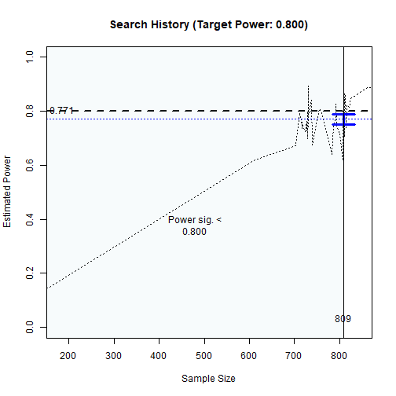
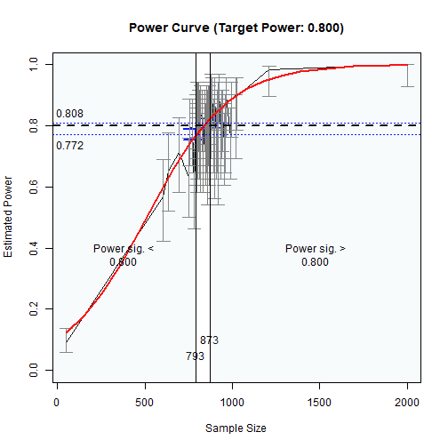

Difficult Cases for Optimization (Internal)
2026-02-28
Source:vignettes/articles/x_from_power_for_n_known_difficult_cases_pba.Rmd
x_from_power_for_n_known_difficult_cases_pba.RmdNOTE
This article is for internal testing of the printout.
library(power4mome)
options(power4mome.bz = TRUE)
mod <-
"
m ~ x
y ~ m + x
"
mod_es <-
"
m ~ x: m
y ~ m: s
y ~ x: s
"
out <- power4test(nrep = 2,
model = mod,
pop_es = mod_es,
n = 50000,
iseed = 1234)
print(out,
data_long = TRUE)
#>
#> ====================== Model Information ======================
#>
#> == Model on Factors/Variables ==
#>
#> m ~ x
#> y ~ m + x
#>
#> == Model on Variables/Indicators ==
#>
#> m ~ x
#> y ~ m + x
#>
#> ====== Population Values ======
#>
#> Regressions:
#> Population
#> m ~
#> x 0.300
#> y ~
#> m 0.100
#> x 0.100
#>
#> Variances:
#> Population
#> .m 0.910
#> .y 0.974
#> x 1.000
#>
#> (Computing indirect effects for 2 paths ...)
#>
#> == Population Conditional/Indirect Effect(s) ==
#>
#> == Indirect Effect(s) ==
#>
#> ind
#> x -> m -> y 0.030
#> x -> y 0.100
#>
#> - The 'ind' column shows the indirect effect(s).
#>
#> ======================= Data Information =======================
#>
#> Number of Replications: 2
#> Sample Sizes: 50000
#>
#> ==== Descriptive Statistics ====
#>
#> vars n mean sd skew kurtosis se
#> m 1 1e+05 0.00 1 0.01 0.03 0
#> y 2 1e+05 0.01 1 0.01 0.00 0
#> x 3 1e+05 0.00 1 0.01 0.01 0
#>
#> ===== Parameter Estimates Based on All 2 Samples Combined =====
#>
#> Total Sample Size: 100000
#>
#> ==== Standardized Estimates ====
#>
#> Variances and error variances omitted.
#>
#> Regressions:
#> est.std
#> m ~
#> x 0.301
#> y ~
#> m 0.095
#> x 0.101
#>
#>
#> ==================== Extra Element(s) Found ====================
#>
#> - fit
#>
#> === Element(s) of the First Dataset ===
#>
#> ============ <fit> ============
#>
#> lavaan 0.6-21 ended normally after 1 iteration
#>
#> Estimator ML
#> Optimization method NLMINB
#> Number of model parameters 5
#>
#> Number of observations 50000
#>
#> Model Test User Model:
#>
#> Test statistic 0.000
#> Degrees of freedom 0
out <- power4test(nrep = 200,
model = mod,
pop_es = mod_es,
n = 50,
R = 199,
ci_type = "mc",
test_fun = test_indirect_effect,
test_args = list(x = "x",
m = "m",
y = "y",
mc_ci = TRUE),
iseed = 2345,
parallel = TRUE)
print(out,
test_long = TRUE)
#>
#> ====================== Model Information ======================
#>
#> == Model on Factors/Variables ==
#>
#> m ~ x
#> y ~ m + x
#>
#> == Model on Variables/Indicators ==
#>
#> m ~ x
#> y ~ m + x
#>
#> ====== Population Values ======
#>
#> Regressions:
#> Population
#> m ~
#> x 0.300
#> y ~
#> m 0.100
#> x 0.100
#>
#> Variances:
#> Population
#> .m 0.910
#> .y 0.974
#> x 1.000
#>
#> (Computing indirect effects for 2 paths ...)
#>
#> == Population Conditional/Indirect Effect(s) ==
#>
#> == Indirect Effect(s) ==
#>
#> ind
#> x -> m -> y 0.030
#> x -> y 0.100
#>
#> - The 'ind' column shows the indirect effect(s).
#>
#> ======================= Data Information =======================
#>
#> Number of Replications: 200
#> Sample Sizes: 50
#>
#> Call print with 'data_long = TRUE' for further information.
#>
#> ==================== Extra Element(s) Found ====================
#>
#> - fit
#> - mc_out
#>
#> === Element(s) of the First Dataset ===
#>
#> ============ <fit> ============
#>
#> lavaan 0.6-21 ended normally after 1 iteration
#>
#> Estimator ML
#> Optimization method NLMINB
#> Number of model parameters 5
#>
#> Number of observations 50
#>
#> Model Test User Model:
#>
#> Test statistic 0.000
#> Degrees of freedom 0
#>
#> =========== <mc_out> ===========
#>
#>
#> == A 'mc_out' class object ==
#>
#> Number of Monte Carlo replications: 199
#>
#>
#> =============== <test_indirect: x->m->y> ===============
#>
#> Mean(s) across replication:
#> est cilo cihi sig pvalue R nlt0 alpha bz_39 bz_79 bz_119 bz_159
#> 0.032 NaN NaN 0.092 0.458 199.000 66.395 0.050 0.075 0.084 0.085 0.087
#> bz_199
#> 0.090
#>
#> - The value 'sig' is the rejection rate.
#> - If the null hypothesis is false, this is the power.
#> - Number of valid replications for rejection rate: 200
#> - Proportion of valid replications for rejection rate: 1.000
out_n <- n_from_power(out,
what = "ub",
seed = 4567,
final_nrep = 2000,
algorithm = "probabilistic_bisection")
#>
#> --- Setting ---
#>
#> Algorithm: probabilistic_bisection
#> Goal: close_enough
#> What: ub (Upper bound of the confidence interval)
#>
#> --- Progress ---
#>
#> - Set 'progress = FALSE' to suppress displaying the progress.
#> Initial interval: [50, 100]
#> Do the simulation for the lower bound ...
#> Do the simulation for the upper bound ...
#>
#> == Enter extending interval ...
#> Current interval: [50, 100]
#> Interval below the solution. Extend the upper bound ...
#>
#> Try x = 555
#>
#> Estimated power at 555: 0.614, 95.0% confidence interval: [0.592,0.635]
#>
#>
#> (Extending the interval) Iteration: 1
#>
#> New interval: [100, 555]
#>
#> Try x = 1388
#>
#> Estimated power at 1388: 0.907, 95.0% confidence interval: [0.893,0.918]
#>
#>
#> (Extending the interval) Iteration: 2
#>
#> New interval: [555, 1388]
#> Interval OK.
#> Final extended interval: [555, 1388]
#> == Exit extending interval ...
#> Search Progress Note:
#> - #: Iteration number
#> - nrep: The number of replications
#> - n/es: The value to try
#> - TE: Time elapsed
#> - ETA: Estimated time to do all 5000 replications and one final check
#> - Rep: The number of replications used out of the total number of replications
#> - Dx: The range of changes of x in the last 5 iterations
#> - Df: The range of changes of f in the last 5 iterations
#> - PP: The region(s) of probable power
#> #:1|nrep:50|n:972|Rep:50/5000
#:1|nrep:50|n:972|TE:0.0211 secs|Rep:50/5000
#> #:1|nrep:50|n:972|TE:0.0211 secs|Rep:50/5000|PP:[0.525,0.878]
#> #:2|nrep:50|n:787|TE:1.63 secs|ETA:1.76 mins|Rep:100/5000|PP:[0.525,0.878]
#> #:2|nrep:50|n:787|TE:1.63 secs|ETA:1.76 mins|Rep:100/5000|PP:[0.519,0.873]
#> #:3|nrep:50|n:853|TE:3.25 secs|ETA:2.34 mins|Rep:150/5000|PP:[0.519,0.873]
#> #:3|nrep:50|n:853|TE:3.25 secs|ETA:2.34 mins|Rep:150/5000|PP:[0.647,0.840]
#> #:4|nrep:50|n:832|TE:4.85 secs|ETA:2.61 mins|Rep:200/5000|PP:[0.647,0.840]
#> #:4|nrep:50|n:832|TE:4.85 secs|ETA:2.61 mins|Rep:200/5000|PP:[0.634,0.829]
#> #:5|nrep:50|n:890|TE:6.5 secs|ETA:2.78 mins|Rep:250/5000|PP:[0.634,0.829]
#> #:5|nrep:50|n:890|TE:6.5 secs|ETA:2.78
#> mins|Rep:250/5000|Dx:185|Df:0.212|PP:[0.634,0.829]
#:5|nrep:50|n:890|TE:6.5
#> secs|ETA:2.78 mins|Rep:250/5000|Dx:185|Df:0.212|PP:[0.633,0.828]
#> #:6|nrep:50|n:887|TE:8.15 secs|ETA:2.89
#> mins|Rep:300/5000|Dx:185|Df:0.212|PP:[0.633,0.828]
#:6|nrep:50|n:887|TE:8.15
#> secs|ETA:2.89 mins|Rep:300/5000|Dx:103|Df:0.124|PP:[0.633,0.828]
#> #:6|nrep:50|n:887|TE:8.15 secs|ETA:2.89
#> mins|Rep:300/5000|Dx:103|Df:0.124|PP:[0.640,0.834]
#:7|nrep:50|n:844|TE:9.84
#> secs|ETA:2.96 mins|Rep:350/5000|Dx:103|Df:0.124|PP:[0.640,0.834]
#> #:7|nrep:50|n:844|TE:9.84 secs|ETA:2.96
#> mins|Rep:350/5000|Dx:58|Df:0.124|PP:[0.640,0.834] #:7|nrep:50|n:844|TE:9.84
#> secs|ETA:2.96 mins|Rep:350/5000|Dx:58|Df:0.124|PP:[0.637,0.831]
#> #:8|nrep:50|n:850|TE:12.2 secs|ETA:3.18
#> mins|Rep:400/5000|Dx:58|Df:0.124|PP:[0.637,0.831]
#:8|nrep:50|n:850|TE:12.2
#> secs|ETA:3.18 mins|Rep:400/5000|Dx:58|Df:0.124|PP:[0.637,0.831]
#> #:8|nrep:50|n:850|TE:12.2 secs|ETA:3.18
#> mins|Rep:400/5000|Dx:58|Df:0.124|PP:[0.636,0.831]
#:9|nrep:50|n:849|TE:14
#> secs|ETA:3.21 mins|Rep:450/5000|Dx:58|Df:0.124|PP:[0.636,0.831]
#> #:9|nrep:50|n:849|TE:14 secs|ETA:3.21
#> mins|Rep:450/5000|Dx:46|Df:0.117|PP:[0.636,0.831]
#:9|nrep:50|n:849|TE:14
#> secs|ETA:3.21 mins|Rep:450/5000|Dx:46|Df:0.117|PP:[0.646,0.812]
#> #:10|nrep:50|n:804|TE:15.9 secs|ETA:3.24
#> mins|Rep:500/5000|Dx:46|Df:0.117|PP:[0.646,0.812]
#:10|nrep:50|n:804|TE:15.9
#> secs|ETA:3.24 mins|Rep:500/5000|Dx:83|Df:0.130|PP:[0.646,0.812]
#> #:10|nrep:50|n:804|TE:15.9 secs|ETA:3.24
#> mins|Rep:500/5000|Dx:83|Df:0.130|PP:[0.643,0.809]
#:11|nrep:50|n:828|TE:17.6
#> secs|ETA:3.24 mins|Rep:550/5000|Dx:83|Df:0.130|PP:[0.643,0.809]
#> #:11|nrep:50|n:828|TE:17.6 secs|ETA:3.24
#> mins|Rep:550/5000|Dx:46|Df:0.130|PP:[0.643,0.809]
#:11|nrep:50|n:828|TE:17.6
#> secs|ETA:3.24 mins|Rep:550/5000|Dx:46|Df:0.130|PP:[0.645,0.811]
#> #:12|nrep:50|n:817|TE:19.3 secs|ETA:3.23
#> mins|Rep:600/5000|Dx:46|Df:0.130|PP:[0.645,0.811]
#:12|nrep:50|n:817|TE:19.3
#> secs|ETA:3.23 mins|Rep:600/5000|Dx:46|Df:0.194|PP:[0.645,0.811]
#> #:12|nrep:50|n:817|TE:19.3 secs|ETA:3.23
#> mins|Rep:600/5000|Dx:46|Df:0.194|PP:[0.763,0.831]
#:13|nrep:50|n:840|TE:21.1
#> secs|ETA:3.23 mins|Rep:650/5000|Dx:46|Df:0.194|PP:[0.763,0.831]
#> #:13|nrep:50|n:840|TE:21.1 secs|ETA:3.23
#> mins|Rep:650/5000|Dx:45|Df:0.194|PP:[0.763,0.831]
#:13|nrep:50|n:840|TE:21.1
#> secs|ETA:3.23 mins|Rep:650/5000|Dx:45|Df:0.194|PP:[0.762,0.830]
#> #:14|nrep:50|n:841|TE:22.8 secs|ETA:3.21
#> mins|Rep:700/5000|Dx:45|Df:0.194|PP:[0.762,0.830]
#:14|nrep:50|n:841|TE:22.8
#> secs|ETA:3.21 mins|Rep:700/5000|Dx:37|Df:0.114|PP:[0.762,0.830]
#> #:14|nrep:50|n:841|TE:22.8 secs|ETA:3.21
#> mins|Rep:700/5000|Dx:37|Df:0.114|PP:[0.757,0.826]
#:15|nrep:50|n:847|TE:24.6
#> secs|ETA:3.2 mins|Rep:750/5000|Dx:37|Df:0.114|PP:[0.757,0.826]
#> #:15|nrep:50|n:847|TE:24.6 secs|ETA:3.2
#> mins|Rep:750/5000|Dx:30|Df:0.143|PP:[0.757,0.826]
#:15|nrep:50|n:847|TE:24.6
#> secs|ETA:3.2 mins|Rep:750/5000|Dx:30|Df:0.143|PP:[0.760,0.829]
#> #:16|nrep:50|n:844|TE:26.3 secs|ETA:3.18
#> mins|Rep:800/5000|Dx:30|Df:0.143|PP:[0.760,0.829]
#:16|nrep:50|n:844|TE:26.3
#> secs|ETA:3.18 mins|Rep:800/5000|Dx:30|Df:0.201|PP:[0.760,0.829]
#> #:16|nrep:50|n:844|TE:26.3 secs|ETA:3.18
#> mins|Rep:800/5000|Dx:30|Df:0.201|PP:[0.640,0.807]
#:17|nrep:50|n:839|TE:28
#> secs|ETA:3.16 mins|Rep:850/5000|Dx:30|Df:0.201|PP:[0.640,0.807]
#> #:17|nrep:50|n:839|TE:28 secs|ETA:3.16
#> mins|Rep:850/5000|Dx:8|Df:0.179|PP:[0.640,0.807] #:17|nrep:50|n:839|TE:28
#> secs|ETA:3.16 mins|Rep:850/5000|Dx:8|Df:0.179|PP:[0.639,0.805]
#> #:18|nrep:50|n:841|TE:29.7 secs|ETA:3.14
#> mins|Rep:900/5000|Dx:8|Df:0.179|PP:[0.639,0.805]
#:18|nrep:50|n:841|TE:29.7
#> secs|ETA:3.14 mins|Rep:900/5000|Dx:8|Df:0.179|PP:[0.639,0.805]
#> #:18|nrep:50|n:841|TE:29.7 secs|ETA:3.14
#> mins|Rep:900/5000|Dx:8|Df:0.179|PP:[0.643,0.795]
#:19|nrep:50|n:833|TE:31.3
#> secs|ETA:3.11 mins|Rep:950/5000|Dx:8|Df:0.179|PP:[0.643,0.795]
#> #:19|nrep:50|n:833|TE:31.3 secs|ETA:3.11
#> mins|Rep:950/5000|Dx:14|Df:0.169|PP:[0.643,0.795]
#:19|nrep:50|n:833|TE:31.3
#> secs|ETA:3.11 mins|Rep:950/5000|Dx:14|Df:0.169|PP:[0.765,0.805]
#> #:20|nrep:50|n:838|TE:33 secs|ETA:3.08
#> mins|Rep:1000/5000|Dx:14|Df:0.169|PP:[0.765,0.805] #:20|nrep:50|n:838|TE:33
#> secs|ETA:3.08 mins|Rep:1000/5000|Dx:11|Df:0.169|PP:[0.765,0.805]
#> #:20|nrep:50|n:838|TE:33 secs|ETA:3.08
#> mins|Rep:1000/5000|Dx:11|Df:0.169|PP:[0.766,0.805]
#:21|nrep:50|n:838|TE:34.7
#> secs|ETA:3.06 mins|Rep:1050/5000|Dx:11|Df:0.169|PP:[0.766,0.805]
#> #:21|nrep:50|n:838|TE:34.7 secs|ETA:3.06
#> mins|Rep:1050/5000|Dx:8|Df:0.237|PP:[0.766,0.805] #:21|nrep:50|n:838|TE:34.7
#> secs|ETA:3.06 mins|Rep:1050/5000|Dx:8|Df:0.237|PP:[0.771,0.827]
#> #:22|nrep:50|n:841|TE:36.4 secs|ETA:3.04
#> mins|Rep:1100/5000|Dx:8|Df:0.237|PP:[0.771,0.827]
#:22|nrep:50|n:841|TE:36.4
#> secs|ETA:3.04 mins|Rep:1100/5000|Dx:8|Df:0.237|PP:[0.771,0.827]
#> #:22|nrep:50|n:841|TE:36.4 secs|ETA:3.04
#> mins|Rep:1100/5000|Dx:8|Df:0.237|PP:[0.769,0.797]
#>
#> Do Final Check 1: The width of the dominant region of probable power is 0.0361 or less.
#> #:23|nrep:2000|n:842|TE:38.1 secs|ETA:3.18
#> mins|Rep:1100/5000|Dx:8|Df:0.237|PP:[0.769,0.797]
#:23|nrep:2000|n:842|TE:38.1
#> secs|ETA:3.18 mins|Rep:1100/5000|Dx:8|Df:0.237|PP:[0.772,0.805]
#>
#> ** Search ended **: Solution found.
#> Summary:
#> - Number of iterations: 23
#> - Number of replications: 1100
#> - Time elapsed: 1.097 mins
#> - The range of changes x in the last 5 iteration: 8
#> - The range of changes f in the last 5 iteration: 0.237
#> Solution found.
#>
#>
#> ========== Final Stage ==========
#>
#> - Start at 2026-02-28 11:49:24
#> - Rejection Rates:
#>
#> [test]: test_indirect: x->m->y
#> [test_label]: Test
#> n est p.v reject r.cilo r.cihi
#> 1 50 0.032 1.000 0.092 0.058 0.138
#> 2 50 0.030 1.000 0.059 0.021 0.162
#> 3 100 0.024 1.000 0.136 0.070 0.262
#> 4 555 0.027 1.000 0.614 0.482 0.741
#> 5 787 0.031 1.000 0.738 0.604 0.841
#> 6 804 0.029 1.000 0.752 0.626 0.857
#> 7 817 0.027 1.000 0.688 0.542 0.792
#> 8 828 0.030 1.000 0.802 0.670 0.888
#> 9 832 0.028 1.000 0.725 0.583 0.825
#> 10 833 0.028 1.000 0.719 0.583 0.825
#> 11 838 0.027 1.000 0.790 0.670 0.888
#> 12 838 0.027 1.000 0.624 0.482 0.741
#> 13 839 0.031 1.000 0.762 0.626 0.857
#> 14 840 0.030 1.000 0.773 0.648 0.872
#> 15 841 0.027 1.000 0.709 0.562 0.809
#> 16 841 0.030 1.000 0.861 0.738 0.930
#> 17 841 0.030 1.000 0.736 0.604 0.841
#> 18 842 0.030 1.000 0.792 0.774 0.810
#> 19 844 0.031 1.000 0.764 0.626 0.857
#> 20 844 0.032 1.000 0.888 0.762 0.944
#> 21 847 0.032 1.000 0.830 0.715 0.917
#> 22 849 0.030 1.000 0.882 0.762 0.944
#> 23 850 0.029 1.000 0.787 0.648 0.872
#> 24 853 0.030 1.000 0.803 0.670 0.888
#> 25 887 0.031 1.000 0.849 0.715 0.917
#> 26 890 0.028 1.000 0.791 0.670 0.888
#> 27 972 0.031 1.000 0.938 0.838 0.979
#> 28 1388 0.030 1.000 0.907 0.786 0.957
#> Notes:
#> - n: The sample size in a trial.
#> - p.v: The proportion of valid replications.
#> - est: The mean of the estimates in a test across replications.
#> - reject: The proportion of 'significant' replications, that is, the
#> rejection rate. If the null hypothesis is true, this is the Type I
#> error rate. If the null hypothesis is false, this is the power.
#> - r.cilo,r.cihi: The confidence interval of the rejection rate, based
#> on Wilson's (1927) method.
#> - Refer to the tests for the meanings of other columns.
#>
#> - Estimated Power Curve:
#>
#> Call:
#> power_curve(object = by_x_1, formula = power_model, start = power_curve_start,
#> lower_bound = lower_bound, upper_bound = upper_bound, nls_args = nls_args,
#> nls_control = nls_control, verbose = progress)
#>
#> Predictor: n (Sample Size)
#>
#> Model:
#> Nonlinear regression model
#> model: reject ~ 1 - I(exp((a - x)/b))
#> data: "(Omitted)"
#> a b
#> 5.208 540.199
#> weighted residual sum-of-squares: 4.786
#>
#> Algorithm "port", convergence message: relative convergence (4)
#>
#>
#> - Final Value: 842
#>
#> - Final Estimated Power: 0.7925
#> - Confidence Interval: [0.7742; 0.8097]
#> - CI Level: 95.00%
out_n
#> Call:
#> power4mome::x_from_power(object = out, x = "n", what = "ub",
#> goal = "close_enough", final_nrep = 2000, final_R = 199,
#> seed = 4567, algorithm = "probabilistic_bisection")
#>
#> Setting
#> Predictor(x): Sample Size
#> Parameter: N/A
#> goal: close_enough
#> what: ub
#> algorithm: probabilistic_bisection
#> Level of confidence: 95.00%
#> Target Power: 0.800
#>
#> - Final Value of Sample Size (n): 842
#>
#> - Final Estimated Power (CI): 0.792 [0.774, 0.810]
#>
#> Call `summary()` for detailed results.
summary(out_n)
#>
#> ====== x_from_power Results ======
#>
#> Call:
#> x_from_power(object = out, x = "n", what = "ub", goal = "close_enough",
#> final_nrep = 2000, final_R = 199, seed = 4567, algorithm = "probabilistic_bisection")
#>
#> Predictor (x): Sample Size
#>
#> - Target Power: 0.800
#> - Goal: Find 'x' with estimated upper confidence bound close enough to
#> the target power.
#>
#> === Major Results ===
#>
#> - Final Value (Sample Size): 842
#>
#> - Final Estimated Power: 0.792
#> - Confidence Interval: [0.774; 0.810]
#> - Level of confidence: 95.0%
#> - Based on 2000 replications.
#>
#> === Technical Information ===
#>
#> - Algorithm: probabilistic_bisection
#> - Tolerance for 'close enough': Within 0.01580 of 0.800
#> - The range of values explored: 100 to 972
#> - Time spent in the search: 1.218 mins
#> - The final crude model for the power-predictor relation:
#>
#> Model Type: Nonlinear Regression Model
#>
#> Call:
#> power_curve(object = by_x_1, formula = power_model, start = power_curve_start,
#> lower_bound = lower_bound, upper_bound = upper_bound, nls_args = nls_args,
#> nls_control = nls_control, verbose = progress)
#>
#> Predictor: n (Sample Size)
#>
#> Model:
#> Nonlinear regression model
#> model: reject ~ 1 - I(exp((a - x)/b))
#> data: "(Omitted)"
#> a b
#> 5.208 540.199
#> weighted residual sum-of-squares: 4.786
#>
#> Algorithm "port", convergence message: relative convergence (4)
#>
#> - Detailed Results:
#>
#> [test]: test_indirect: x->m->y
#> [test_label]: Test
#> n est p.v reject r.cilo r.cihi
#> 1 50 0.032 1.000 0.092 0.058 0.138
#> 2 50 0.030 1.000 0.059 0.021 0.162
#> 3 100 0.024 1.000 0.136 0.070 0.262
#> 4 555 0.027 1.000 0.614 0.482 0.741
#> 5 787 0.031 1.000 0.738 0.604 0.841
#> 6 804 0.029 1.000 0.752 0.626 0.857
#> 7 817 0.027 1.000 0.688 0.542 0.792
#> 8 828 0.030 1.000 0.802 0.670 0.888
#> 9 832 0.028 1.000 0.725 0.583 0.825
#> 10 833 0.028 1.000 0.719 0.583 0.825
#> 11 838 0.027 1.000 0.790 0.670 0.888
#> 12 838 0.027 1.000 0.624 0.482 0.741
#> 13 839 0.031 1.000 0.762 0.626 0.857
#> 14 840 0.030 1.000 0.773 0.648 0.872
#> 15 841 0.027 1.000 0.709 0.562 0.809
#> 16 841 0.030 1.000 0.861 0.738 0.930
#> 17 841 0.030 1.000 0.736 0.604 0.841
#> 18 842 0.030 1.000 0.792 0.774 0.810
#> 19 844 0.031 1.000 0.764 0.626 0.857
#> 20 844 0.032 1.000 0.888 0.762 0.944
#> 21 847 0.032 1.000 0.830 0.715 0.917
#> 22 849 0.030 1.000 0.882 0.762 0.944
#> 23 850 0.029 1.000 0.787 0.648 0.872
#> 24 853 0.030 1.000 0.803 0.670 0.888
#> 25 887 0.031 1.000 0.849 0.715 0.917
#> 26 890 0.028 1.000 0.791 0.670 0.888
#> 27 972 0.031 1.000 0.938 0.838 0.979
#> 28 1388 0.030 1.000 0.907 0.786 0.957
#> Notes:
#> - n: The sample size in a trial.
#> - p.v: The proportion of valid replications.
#> - est: The mean of the estimates in a test across replications.
#> - reject: The proportion of 'significant' replications, that is, the
#> rejection rate. If the null hypothesis is true, this is the Type I
#> error rate. If the null hypothesis is false, this is the power.
#> - r.cilo,r.cihi: The confidence interval of the rejection rate, based
#> on Wilson's (1927) method.
#> - Refer to the tests for the meanings of other columns.
plot(out_n)

The Power Curve
out_n_lb <- n_from_power(out,
what = "lb",
seed = 2345,
final_nrep = 2000,
algorithm = "probabilistic_bisection")
#>
#> --- Setting ---
#>
#> Algorithm: probabilistic_bisection
#> Goal: close_enough
#> What: lb (Lower bound of the confidence interval)
#>
#> --- Progress ---
#>
#> - Set 'progress = FALSE' to suppress displaying the progress.
#> Initial interval: [50, 100]
#> Do the simulation for the lower bound ...
#> Do the simulation for the upper bound ...
#>
#> == Enter extending interval ...
#> Current interval: [50, 100]
#> Interval below the solution. Extend the upper bound ...
#>
#> Try x = 2000
#>
#> Estimated power at 2000: 0.964, 95.0% confidence interval: [0.955,0.971]
#>
#>
#> (Extending the interval) Iteration: 1
#>
#> New interval: [100, 2000]
#> Interval OK.
#> Final extended interval: [100, 2000]
#> == Exit extending interval ...
#> Search Progress Note:
#> - #: Iteration number
#> - nrep: The number of replications
#> - n/es: The value to try
#> - TE: Time elapsed
#> - ETA: Estimated time to do all 5000 replications and one final check
#> - Rep: The number of replications used out of the total number of replications
#> - Dx: The range of changes of x in the last 5 iterations
#> - Df: The range of changes of f in the last 5 iterations
#> - PP: The region(s) of probable power
#> #:1|nrep:50|n:1050|Rep:50/5000
#:1|nrep:50|n:1050|TE:0.0154 secs|Rep:50/5000
#> #:1|nrep:50|n:1050|TE:0.0154 secs|Rep:50/5000|PP:[0.110,0.813]
#> #:2|nrep:50|n:717|TE:1.53 secs|ETA:1.67 mins|Rep:100/5000|PP:[0.110,0.813]
#> #:2|nrep:50|n:717|TE:1.53 secs|ETA:1.67 mins|Rep:100/5000|PP:[0.120,0.887]
#> #:3|nrep:50|n:907|TE:3.05 secs|ETA:2.23 mins|Rep:150/5000|PP:[0.120,0.887]
#> #:3|nrep:50|n:907|TE:3.05 secs|ETA:2.23 mins|Rep:150/5000|PP:[0.121,0.900]
#> #:4|nrep:50|n:790|TE:4.62 secs|ETA:2.51 mins|Rep:200/5000|PP:[0.121,0.900]
#> #:4|nrep:50|n:790|TE:4.62 secs|ETA:2.51 mins|Rep:200/5000|PP:[0.122,0.913]
#> #:5|nrep:50|n:784|TE:6.16 secs|ETA:2.66 mins|Rep:250/5000|PP:[0.122,0.913]
#> #:5|nrep:50|n:784|TE:6.16 secs|ETA:2.66
#> mins|Rep:250/5000|Dx:333|Df:0.108|PP:[0.122,0.913]
#:5|nrep:50|n:784|TE:6.16
#> secs|ETA:2.66 mins|Rep:250/5000|Dx:333|Df:0.108|PP:[0.122,0.913]
#> #:6|nrep:50|n:886|TE:7.86 secs|ETA:2.79
#> mins|Rep:300/5000|Dx:333|Df:0.108|PP:[0.122,0.913]
#:6|nrep:50|n:886|TE:7.86
#> secs|ETA:2.79 mins|Rep:300/5000|Dx:190|Df:0.109|PP:[0.122,0.913]
#> #:6|nrep:50|n:886|TE:7.86 secs|ETA:2.79
#> mins|Rep:300/5000|Dx:190|Df:0.109|PP:[0.122,0.918]
#:7|nrep:50|n:809|TE:9.44
#> secs|ETA:2.84 mins|Rep:350/5000|Dx:190|Df:0.109|PP:[0.122,0.918]
#> #:7|nrep:50|n:809|TE:9.44 secs|ETA:2.84
#> mins|Rep:350/5000|Dx:123|Df:0.109|PP:[0.122,0.918]
#:7|nrep:50|n:809|TE:9.44
#> secs|ETA:2.84 mins|Rep:350/5000|Dx:123|Df:0.109|PP:[0.123,0.925]
#> #:8|nrep:50|n:751|TE:11 secs|ETA:2.88
#> mins|Rep:400/5000|Dx:123|Df:0.109|PP:[0.123,0.925] #:8|nrep:50|n:751|TE:11
#> secs|ETA:2.88 mins|Rep:400/5000|Dx:135|Df:0.109|PP:[0.123,0.925]
#> #:8|nrep:50|n:751|TE:11 secs|ETA:2.88
#> mins|Rep:400/5000|Dx:135|Df:0.109|PP:[0.125,0.873]
#:9|nrep:50|n:595|TE:12.6
#> secs|ETA:2.9 mins|Rep:450/5000|Dx:135|Df:0.109|PP:[0.125,0.873]
#> #:9|nrep:50|n:595|TE:12.6 secs|ETA:2.9
#> mins|Rep:450/5000|Dx:291|Df:0.258|PP:[0.125,0.873]
#:9|nrep:50|n:595|TE:12.6
#> secs|ETA:2.9 mins|Rep:450/5000|Dx:291|Df:0.258|PP:[0.171,0.888]
#> #:10|nrep:50|n:761|TE:14.2 secs|ETA:2.92
#> mins|Rep:500/5000|Dx:291|Df:0.258|PP:[0.171,0.888]
#:10|nrep:50|n:761|TE:14.2
#> secs|ETA:2.92 mins|Rep:500/5000|Dx:291|Df:0.258|PP:[0.171,0.888]
#> #:10|nrep:50|n:761|TE:14.2 secs|ETA:2.92
#> mins|Rep:500/5000|Dx:291|Df:0.258|PP:[0.172,0.890]
#:11|nrep:50|n:756|TE:15.8
#> secs|ETA:2.94 mins|Rep:550/5000|Dx:291|Df:0.258|PP:[0.172,0.890]
#> #:11|nrep:50|n:756|TE:15.8 secs|ETA:2.94
#> mins|Rep:550/5000|Dx:214|Df:0.243|PP:[0.172,0.890]
#:11|nrep:50|n:756|TE:15.8
#> secs|ETA:2.94 mins|Rep:550/5000|Dx:214|Df:0.243|PP:[0.705,0.886]
#> #:12|nrep:50|n:819|TE:17.7 secs|ETA:2.98
#> mins|Rep:600/5000|Dx:214|Df:0.243|PP:[0.705,0.886]
#:12|nrep:50|n:819|TE:17.7
#> secs|ETA:2.98 mins|Rep:600/5000|Dx:224|Df:0.243|PP:[0.705,0.886]
#> #:12|nrep:50|n:819|TE:17.7 secs|ETA:2.98
#> mins|Rep:600/5000|Dx:224|Df:0.243|PP:[0.764,0.983]
#:13|nrep:50|n:873|TE:19.3
#> secs|ETA:2.97 mins|Rep:650/5000|Dx:224|Df:0.243|PP:[0.764,0.983]
#> #:13|nrep:50|n:873|TE:19.3 secs|ETA:2.97
#> mins|Rep:650/5000|Dx:278|Df:0.280|PP:[0.764,0.983]
#:13|nrep:50|n:873|TE:19.3
#> secs|ETA:2.97 mins|Rep:650/5000|Dx:278|Df:0.280|PP:[0.703,0.884]
#> #:14|nrep:50|n:842|TE:20.9 secs|ETA:2.97
#> mins|Rep:700/5000|Dx:278|Df:0.280|PP:[0.703,0.884]
#:14|nrep:50|n:842|TE:20.9
#> secs|ETA:2.97 mins|Rep:700/5000|Dx:117|Df:0.173|PP:[0.703,0.884]
#> #:14|nrep:50|n:842|TE:20.9 secs|ETA:2.97
#> mins|Rep:700/5000|Dx:117|Df:0.173|PP:[0.701,0.883]
#:15|nrep:50|n:845|TE:22.5
#> secs|ETA:2.96 mins|Rep:750/5000|Dx:117|Df:0.173|PP:[0.701,0.883]
#> #:15|nrep:50|n:845|TE:22.5 secs|ETA:2.96
#> mins|Rep:750/5000|Dx:117|Df:0.173|PP:[0.701,0.883]
#:15|nrep:50|n:845|TE:22.5
#> secs|ETA:2.96 mins|Rep:750/5000|Dx:117|Df:0.173|PP:[0.703,0.844]
#> #:16|nrep:50|n:836|TE:24.2 secs|ETA:2.96
#> mins|Rep:800/5000|Dx:117|Df:0.173|PP:[0.703,0.844]
#:16|nrep:50|n:836|TE:24.2
#> secs|ETA:2.96 mins|Rep:800/5000|Dx:54|Df:0.182|PP:[0.703,0.844]
#> #:16|nrep:50|n:836|TE:24.2 secs|ETA:2.96
#> mins|Rep:800/5000|Dx:54|Df:0.182|PP:[0.709,0.842]
#:17|nrep:50|n:820|TE:25.9
#> secs|ETA:2.94 mins|Rep:850/5000|Dx:54|Df:0.182|PP:[0.709,0.842]
#> #:17|nrep:50|n:820|TE:25.9 secs|ETA:2.94
#> mins|Rep:850/5000|Dx:53|Df:0.170|PP:[0.709,0.842]
#:17|nrep:50|n:820|TE:25.9
#> secs|ETA:2.94 mins|Rep:850/5000|Dx:53|Df:0.170|PP:[0.704,0.845]
#> #:18|nrep:50|n:829|TE:27.5 secs|ETA:2.93
#> mins|Rep:900/5000|Dx:53|Df:0.170|PP:[0.704,0.845]
#:18|nrep:50|n:829|TE:27.5
#> secs|ETA:2.93 mins|Rep:900/5000|Dx:25|Df:0.170|PP:[0.704,0.845]
#> #:18|nrep:50|n:829|TE:27.5 secs|ETA:2.93
#> mins|Rep:900/5000|Dx:25|Df:0.170|PP:[0.767,0.882]
#:19|nrep:50|n:833|TE:29.2
#> secs|ETA:2.92 mins|Rep:950/5000|Dx:25|Df:0.170|PP:[0.767,0.882]
#> #:19|nrep:50|n:833|TE:29.2 secs|ETA:2.92
#> mins|Rep:950/5000|Dx:25|Df:0.170|PP:[0.767,0.882]
#:19|nrep:50|n:833|TE:29.2
#> secs|ETA:2.92 mins|Rep:950/5000|Dx:25|Df:0.170|PP:[0.766,0.882]
#> #:20|nrep:50|n:834|TE:31 secs|ETA:2.91
#> mins|Rep:1000/5000|Dx:25|Df:0.170|PP:[0.766,0.882] #:20|nrep:50|n:834|TE:31
#> secs|ETA:2.91 mins|Rep:1000/5000|Dx:16|Df:0.170|PP:[0.766,0.882]
#> #:20|nrep:50|n:834|TE:31 secs|ETA:2.91
#> mins|Rep:1000/5000|Dx:16|Df:0.170|PP:[0.768,0.883]
#:21|nrep:50|n:831|TE:32.8
#> secs|ETA:2.91 mins|Rep:1050/5000|Dx:16|Df:0.170|PP:[0.768,0.883]
#> #:21|nrep:50|n:831|TE:32.8 secs|ETA:2.91
#> mins|Rep:1050/5000|Dx:14|Df:0.140|PP:[0.768,0.883]
#:21|nrep:50|n:831|TE:32.8
#> secs|ETA:2.91 mins|Rep:1050/5000|Dx:14|Df:0.140|PP:[0.705,0.839]
#> #:22|nrep:50|n:829|TE:34.7 secs|ETA:2.9
#> mins|Rep:1100/5000|Dx:14|Df:0.140|PP:[0.705,0.839] #:22|nrep:50|n:829|TE:34.7
#> secs|ETA:2.9 mins|Rep:1100/5000|Dx:5|Df:0.120|PP:[0.705,0.839]
#> #:22|nrep:50|n:829|TE:34.7 secs|ETA:2.9
#> mins|Rep:1100/5000|Dx:5|Df:0.120|PP:[0.706,0.840]
#:23|nrep:50|n:826|TE:36.5
#> secs|ETA:2.9 mins|Rep:1150/5000|Dx:5|Df:0.120|PP:[0.706,0.840]
#> #:23|nrep:50|n:826|TE:36.5 secs|ETA:2.9
#> mins|Rep:1150/5000|Dx:8|Df:0.066|PP:[0.706,0.840]
#:23|nrep:50|n:826|TE:36.5
#> secs|ETA:2.9 mins|Rep:1150/5000|Dx:8|Df:0.066|PP:[0.708,0.837]
#> #:24|nrep:50|n:823|TE:38.4 secs|ETA:2.89
#> mins|Rep:1200/5000|Dx:8|Df:0.066|PP:[0.708,0.837]
#:24|nrep:50|n:823|TE:38.4
#> secs|ETA:2.89 mins|Rep:1200/5000|Dx:11|Df:0.090|PP:[0.708,0.837]
#> #:24|nrep:50|n:823|TE:38.4 secs|ETA:2.89
#> mins|Rep:1200/5000|Dx:11|Df:0.090|PP:[0.706,0.840]
#:25|nrep:50|n:825|TE:40.1
#> secs|ETA:2.87 mins|Rep:1250/5000|Dx:11|Df:0.090|PP:[0.706,0.840]
#> #:25|nrep:50|n:825|TE:40.1 secs|ETA:2.87
#> mins|Rep:1250/5000|Dx:8|Df:0.090|PP:[0.706,0.840] #:25|nrep:50|n:825|TE:40.1
#> secs|ETA:2.87 mins|Rep:1250/5000|Dx:8|Df:0.090|PP:[0.706,0.840]
#> #:26|nrep:50|n:825|TE:41.9 secs|ETA:2.86
#> mins|Rep:1300/5000|Dx:8|Df:0.090|PP:[0.706,0.840]
#:26|nrep:50|n:825|TE:41.9
#> secs|ETA:2.86 mins|Rep:1300/5000|Dx:6|Df:0.096|PP:[0.706,0.840]
#> #:26|nrep:50|n:825|TE:41.9 secs|ETA:2.86
#> mins|Rep:1300/5000|Dx:6|Df:0.096|PP:[0.770,0.844]
#:27|nrep:50|n:829|TE:43.7
#> secs|ETA:2.85 mins|Rep:1350/5000|Dx:6|Df:0.096|PP:[0.770,0.844]
#> #:27|nrep:50|n:829|TE:43.7 secs|ETA:2.85
#> mins|Rep:1350/5000|Dx:6|Df:0.093|PP:[0.770,0.844]
#:27|nrep:50|n:829|TE:43.7
#> secs|ETA:2.85 mins|Rep:1350/5000|Dx:6|Df:0.093|PP:[0.785,0.843]
#> #:28|nrep:50|n:830|TE:45.5 secs|ETA:2.83
#> mins|Rep:1400/5000|Dx:6|Df:0.093|PP:[0.785,0.843]
#:28|nrep:50|n:830|TE:45.5
#> secs|ETA:2.83 mins|Rep:1400/5000|Dx:7|Df:0.089|PP:[0.785,0.843]
#> #:28|nrep:50|n:830|TE:45.5 secs|ETA:2.83
#> mins|Rep:1400/5000|Dx:7|Df:0.089|PP:[0.786,0.843]
#:29|nrep:50|n:829|TE:47.3
#> secs|ETA:2.81 mins|Rep:1450/5000|Dx:7|Df:0.089|PP:[0.786,0.843]
#> #:29|nrep:50|n:829|TE:47.3 secs|ETA:2.81
#> mins|Rep:1450/5000|Dx:5|Df:0.089|PP:[0.786,0.843]
#:29|nrep:50|n:829|TE:47.3
#> secs|ETA:2.81 mins|Rep:1450/5000|Dx:5|Df:0.089|PP:[0.787,0.844]
#> #:30|nrep:50|n:829|TE:49 secs|ETA:2.79
#> mins|Rep:1500/5000|Dx:5|Df:0.089|PP:[0.787,0.844] #:30|nrep:50|n:829|TE:49
#> secs|ETA:2.79 mins|Rep:1500/5000|Dx:5|Df:0.089|PP:[0.787,0.844]
#> #:30|nrep:50|n:829|TE:49 secs|ETA:2.79
#> mins|Rep:1500/5000|Dx:5|Df:0.089|PP:[0.785,0.842]
#:31|nrep:50|n:830|TE:50.7
#> secs|ETA:2.77 mins|Rep:1550/5000|Dx:5|Df:0.089|PP:[0.785,0.842]
#> #:31|nrep:50|n:830|TE:50.7 secs|ETA:2.77
#> mins|Rep:1550/5000|Dx:1|Df:0.109|PP:[0.785,0.842]
#:31|nrep:50|n:830|TE:50.7
#> secs|ETA:2.77 mins|Rep:1550/5000|Dx:1|Df:0.109|PP:[0.786,0.836]
#> #:32|nrep:50|n:829|TE:52.5 secs|ETA:2.75
#> mins|Rep:1600/5000|Dx:1|Df:0.109|PP:[0.786,0.836]
#:32|nrep:50|n:829|TE:52.5
#> secs|ETA:2.75 mins|Rep:1600/5000|Dx:1|Df:0.111|PP:[0.786,0.836]
#> #:32|nrep:50|n:829|TE:52.5 secs|ETA:2.75
#> mins|Rep:1600/5000|Dx:1|Df:0.111|PP:[0.788,0.838]
#:33|nrep:50|n:829|TE:54.3
#> secs|ETA:2.73 mins|Rep:1650/5000|Dx:1|Df:0.111|PP:[0.788,0.838]
#> #:33|nrep:50|n:829|TE:54.3 secs|ETA:2.73
#> mins|Rep:1650/5000|Dx:1|Df:0.111|PP:[0.788,0.838]
#:33|nrep:50|n:829|TE:54.3
#> secs|ETA:2.73 mins|Rep:1650/5000|Dx:1|Df:0.111|PP:[0.771,0.839]
#> #:34|nrep:50|n:828|TE:56.1 secs|ETA:2.71
#> mins|Rep:1700/5000|Dx:1|Df:0.111|PP:[0.771,0.839]
#:34|nrep:50|n:828|TE:56.1
#> secs|ETA:2.71 mins|Rep:1700/5000|Dx:2|Df:0.155|PP:[0.771,0.839]
#> #:34|nrep:50|n:828|TE:56.1 secs|ETA:2.71
#> mins|Rep:1700/5000|Dx:2|Df:0.155|PP:[0.786,0.836]
#:35|nrep:50|n:829|TE:57.9
#> secs|ETA:2.69 mins|Rep:1750/5000|Dx:2|Df:0.155|PP:[0.786,0.836]
#> #:35|nrep:50|n:829|TE:57.9 secs|ETA:2.69
#> mins|Rep:1750/5000|Dx:2|Df:0.155|PP:[0.786,0.836]
#:35|nrep:50|n:829|TE:57.9
#> secs|ETA:2.69 mins|Rep:1750/5000|Dx:2|Df:0.155|PP:[0.810,0.841]
#>
#> Do Final Check 1: The width of the dominant region of probable power is 0.0338 or less.
#> #:36|nrep:2000|n:829|TE:59.7 secs|ETA:2.77
#> mins|Rep:1750/5000|Dx:2|Df:0.155|PP:[0.810,0.841]
#:36|nrep:2000|n:829|TE:59.7
#> secs|ETA:2.77 mins|Rep:1750/5000|Dx:2|Df:0.155|PP:[0.807,0.838]
#>
#> ** Search ended **: Solution found.
#> Summary:
#> - Number of iterations: 36
#> - Number of replications: 1750
#> - Time elapsed: 1.465 mins
#> - The range of changes x in the last 5 iteration: 2
#> - The range of changes f in the last 5 iteration: 0.155
#> Solution found.
#>
#>
#> ========== Final Stage ==========
#>
#> - Start at 2026-02-28 11:50:57
#> - Rejection Rates:
#>
#> [test]: test_indirect: x->m->y
#> [test_label]: Test
#> n est p.v reject r.cilo r.cihi
#> 1 50 0.032 1.000 0.092 0.058 0.138
#> 2 50 0.033 1.000 0.085 0.032 0.188
#> 3 100 0.025 1.000 0.109 0.043 0.214
#> 4 595 0.029 1.000 0.619 0.482 0.741
#> 5 717 0.029 1.000 0.771 0.648 0.872
#> 6 751 0.032 1.000 0.862 0.738 0.930
#> 7 756 0.030 1.000 0.734 0.604 0.841
#> 8 761 0.032 1.000 0.826 0.692 0.902
#> 9 784 0.029 1.000 0.768 0.626 0.857
#> 10 790 0.031 1.000 0.820 0.692 0.902
#> 11 809 0.032 1.000 0.857 0.738 0.930
#> 12 819 0.028 1.000 0.725 0.583 0.825
#> 13 820 0.030 1.000 0.738 0.604 0.841
#> 14 823 0.029 1.000 0.788 0.648 0.872
#> 15 825 0.031 1.000 0.813 0.692 0.902
#> 16 825 0.029 1.000 0.754 0.626 0.857
#> 17 826 0.032 1.000 0.846 0.715 0.917
#> 18 828 0.028 1.000 0.713 0.583 0.825
#> 19 829 0.031 1.000 0.757 0.626 0.857
#> 20 829 0.029 1.000 0.850 0.715 0.917
#> 21 829 0.032 1.000 0.760 0.626 0.857
#> 22 829 0.029 1.000 0.824 0.692 0.902
#> 23 829 0.028 1.000 0.757 0.626 0.857
#> 24 829 0.030 1.000 0.868 0.738 0.930
#> 25 829 0.032 1.000 0.858 0.738 0.930
#> 26 829 0.029 1.000 0.756 0.626 0.857
#> 27 829 0.030 1.000 0.807 0.789 0.824
#> 28 830 0.030 1.000 0.842 0.715 0.917
#> 29 830 0.032 1.000 0.866 0.738 0.930
#> 30 831 0.031 1.000 0.877 0.762 0.944
#> 31 833 0.028 1.000 0.811 0.692 0.902
#> 32 834 0.033 1.000 0.853 0.738 0.930
#> 33 836 0.033 1.000 0.908 0.786 0.957
#> 34 842 0.031 1.000 0.805 0.670 0.888
#> 35 845 0.032 1.000 0.843 0.715 0.917
#> 36 873 0.031 1.000 0.899 0.786 0.957
#> 37 886 0.032 1.000 0.877 0.762 0.944
#> 38 907 0.029 1.000 0.857 0.738 0.930
#> 39 1050 0.031 1.000 0.875 0.762 0.944
#> 40 2000 0.033 1.000 0.964 0.865 0.989
#> Notes:
#> - n: The sample size in a trial.
#> - p.v: The proportion of valid replications.
#> - est: The mean of the estimates in a test across replications.
#> - reject: The proportion of 'significant' replications, that is, the
#> rejection rate. If the null hypothesis is true, this is the Type I
#> error rate. If the null hypothesis is false, this is the power.
#> - r.cilo,r.cihi: The confidence interval of the rejection rate, based
#> on Wilson's (1927) method.
#> - Refer to the tests for the meanings of other columns.
#>
#> - Estimated Power Curve:
#>
#> Call:
#> power_curve(object = by_x_1, formula = power_model, start = power_curve_start,
#> lower_bound = lower_bound, upper_bound = upper_bound, nls_args = nls_args,
#> nls_control = nls_control, verbose = progress)
#>
#> Predictor: n (Sample Size)
#>
#> Model:
#> Nonlinear regression model
#> model: reject ~ 1 - I(exp((a - x)/b))
#> data: "(Omitted)"
#> a b
#> 9.355 493.057
#> weighted residual sum-of-squares: 4.893
#>
#> Algorithm "port", convergence message: both X-convergence and relative convergence (5)
#>
#>
#> - Final Value: 829
#>
#> - Final Estimated Power: 0.8068
#> - Confidence Interval: [0.7891; 0.8237]
#> - CI Level: 95.00%
out_n_lb
#> Call:
#> power4mome::x_from_power(object = out, x = "n", what = "lb",
#> goal = "close_enough", final_nrep = 2000, final_R = 199,
#> seed = 2345, algorithm = "probabilistic_bisection")
#>
#> Setting
#> Predictor(x): Sample Size
#> Parameter: N/A
#> goal: close_enough
#> what: lb
#> algorithm: probabilistic_bisection
#> Level of confidence: 95.00%
#> Target Power: 0.800
#>
#> - Final Value of Sample Size (n): 829
#>
#> - Final Estimated Power (CI): 0.807 [0.789, 0.824]
#>
#> Call `summary()` for detailed results.
summary(out_n_lb)
#>
#> ====== x_from_power Results ======
#>
#> Call:
#> x_from_power(object = out, x = "n", what = "lb", goal = "close_enough",
#> final_nrep = 2000, final_R = 199, seed = 2345, algorithm = "probabilistic_bisection")
#>
#> Predictor (x): Sample Size
#>
#> - Target Power: 0.800
#> - Goal: Find 'x' with estimated lower confidence bound close enough to
#> the target power.
#>
#> === Major Results ===
#>
#> - Final Value (Sample Size): 829
#>
#> - Final Estimated Power: 0.807
#> - Confidence Interval: [0.789; 0.824]
#> - Level of confidence: 95.0%
#> - Based on 2000 replications.
#>
#> === Technical Information ===
#>
#> - Algorithm: probabilistic_bisection
#> - Tolerance for 'close enough': Within 0.01509 of 0.800
#> - The range of values explored: 100 to 907
#> - Time spent in the search: 1.558 mins
#> - The final crude model for the power-predictor relation:
#>
#> Model Type: Nonlinear Regression Model
#>
#> Call:
#> power_curve(object = by_x_1, formula = power_model, start = power_curve_start,
#> lower_bound = lower_bound, upper_bound = upper_bound, nls_args = nls_args,
#> nls_control = nls_control, verbose = progress)
#>
#> Predictor: n (Sample Size)
#>
#> Model:
#> Nonlinear regression model
#> model: reject ~ 1 - I(exp((a - x)/b))
#> data: "(Omitted)"
#> a b
#> 9.355 493.057
#> weighted residual sum-of-squares: 4.893
#>
#> Algorithm "port", convergence message: both X-convergence and relative convergence (5)
#>
#> - Detailed Results:
#>
#> [test]: test_indirect: x->m->y
#> [test_label]: Test
#> n est p.v reject r.cilo r.cihi
#> 1 50 0.032 1.000 0.092 0.058 0.138
#> 2 50 0.033 1.000 0.085 0.032 0.188
#> 3 100 0.025 1.000 0.109 0.043 0.214
#> 4 595 0.029 1.000 0.619 0.482 0.741
#> 5 717 0.029 1.000 0.771 0.648 0.872
#> 6 751 0.032 1.000 0.862 0.738 0.930
#> 7 756 0.030 1.000 0.734 0.604 0.841
#> 8 761 0.032 1.000 0.826 0.692 0.902
#> 9 784 0.029 1.000 0.768 0.626 0.857
#> 10 790 0.031 1.000 0.820 0.692 0.902
#> 11 809 0.032 1.000 0.857 0.738 0.930
#> 12 819 0.028 1.000 0.725 0.583 0.825
#> 13 820 0.030 1.000 0.738 0.604 0.841
#> 14 823 0.029 1.000 0.788 0.648 0.872
#> 15 825 0.031 1.000 0.813 0.692 0.902
#> 16 825 0.029 1.000 0.754 0.626 0.857
#> 17 826 0.032 1.000 0.846 0.715 0.917
#> 18 828 0.028 1.000 0.713 0.583 0.825
#> 19 829 0.031 1.000 0.757 0.626 0.857
#> 20 829 0.029 1.000 0.850 0.715 0.917
#> 21 829 0.032 1.000 0.760 0.626 0.857
#> 22 829 0.029 1.000 0.824 0.692 0.902
#> 23 829 0.028 1.000 0.757 0.626 0.857
#> 24 829 0.030 1.000 0.868 0.738 0.930
#> 25 829 0.032 1.000 0.858 0.738 0.930
#> 26 829 0.029 1.000 0.756 0.626 0.857
#> 27 829 0.030 1.000 0.807 0.789 0.824
#> 28 830 0.030 1.000 0.842 0.715 0.917
#> 29 830 0.032 1.000 0.866 0.738 0.930
#> 30 831 0.031 1.000 0.877 0.762 0.944
#> 31 833 0.028 1.000 0.811 0.692 0.902
#> 32 834 0.033 1.000 0.853 0.738 0.930
#> 33 836 0.033 1.000 0.908 0.786 0.957
#> 34 842 0.031 1.000 0.805 0.670 0.888
#> 35 845 0.032 1.000 0.843 0.715 0.917
#> 36 873 0.031 1.000 0.899 0.786 0.957
#> 37 886 0.032 1.000 0.877 0.762 0.944
#> 38 907 0.029 1.000 0.857 0.738 0.930
#> 39 1050 0.031 1.000 0.875 0.762 0.944
#> 40 2000 0.033 1.000 0.964 0.865 0.989
#> Notes:
#> - n: The sample size in a trial.
#> - p.v: The proportion of valid replications.
#> - est: The mean of the estimates in a test across replications.
#> - reject: The proportion of 'significant' replications, that is, the
#> rejection rate. If the null hypothesis is true, this is the Type I
#> error rate. If the null hypothesis is false, this is the power.
#> - r.cilo,r.cihi: The confidence interval of the rejection rate, based
#> on Wilson's (1927) method.
#> - Refer to the tests for the meanings of other columns.
plot(out_n_lb)
The Power Curve
n_power_region <- n_region_from_power(out,
seed = 2468,
final_nrep = 2000,
algorithm = "probabilistic_bisection")
#>
#> =========== Phase 1: Upper Bound ===========
#>
#> Find the approximate region with power significantly below 0.8 ...
#>
#> --- Setting ---
#>
#> Algorithm: probabilistic_bisection
#> Goal: close_enough
#> What: ub (Upper bound of the confidence interval)
#>
#> --- Progress ---
#>
#> - Set 'progress = FALSE' to suppress displaying the progress.
#> Initial interval: [50, 100]
#> Do the simulation for the lower bound ...
#> Do the simulation for the upper bound ...
#>
#> == Enter extending interval ...
#> Current interval: [50, 100]
#> Interval below the solution. Extend the upper bound ...
#>
#> Try x = 521
#>
#> Estimated power at 521: 0.580, 95.0% confidence interval: [0.558,0.601]
#>
#>
#> (Extending the interval) Iteration: 1
#>
#> New interval: [100, 521]
#>
#> Try x = 1370
#>
#> Estimated power at 1370: 0.887, 95.0% confidence interval: [0.872,0.900]
#>
#>
#> (Extending the interval) Iteration: 2
#>
#> New interval: [521, 1370]
#> Interval OK.
#> Final extended interval: [521, 1370]
#> == Exit extending interval ...
#> Search Progress Note:
#> - #: Iteration number
#> - nrep: The number of replications
#> - n/es: The value to try
#> - TE: Time elapsed
#> - ETA: Estimated time to do all 5000 replications and one final check
#> - Rep: The number of replications used out of the total number of replications
#> - Dx: The range of changes of x in the last 5 iterations
#> - Df: The range of changes of f in the last 5 iterations
#> - PP: The region(s) of probable power
#> #:1|nrep:50|n:946|Rep:50/5000
#:1|nrep:50|n:946|TE:0.00751 secs|Rep:50/5000
#> #:1|nrep:50|n:946|TE:0.00751 secs|Rep:50/5000|PP:[0.780,0.888]
#> #:2|nrep:50|n:1007|TE:1.53 secs|ETA:1.68 mins|Rep:100/5000|PP:[0.780,0.888]
#> #:2|nrep:50|n:1007|TE:1.53 secs|ETA:1.68 mins|Rep:100/5000|PP:[0.567,0.801]
#> #:3|nrep:50|n:950|TE:3.09 secs|ETA:2.25 mins|Rep:150/5000|PP:[0.567,0.801]
#> #:3|nrep:50|n:950|TE:3.09 secs|ETA:2.25 mins|Rep:150/5000|PP:[0.585,0.817]
#> #:4|nrep:50|n:781|TE:5.11 secs|ETA:2.78 mins|Rep:200/5000|PP:[0.585,0.817]
#> #:4|nrep:50|n:781|TE:5.11 secs|ETA:2.78 mins|Rep:200/5000|PP:[0.588,0.820]
#> #:5|nrep:50|n:837|TE:7.17 secs|ETA:3.09 mins|Rep:250/5000|PP:[0.588,0.820]
#> #:5|nrep:50|n:837|TE:7.17 secs|ETA:3.09
#> mins|Rep:250/5000|Dx:226|Df:0.185|PP:[0.588,0.820]
#:5|nrep:50|n:837|TE:7.17
#> secs|ETA:3.09 mins|Rep:250/5000|Dx:226|Df:0.185|PP:[0.618,0.788]
#> #:6|nrep:50|n:721|TE:9.82 secs|ETA:3.51
#> mins|Rep:300/5000|Dx:226|Df:0.185|PP:[0.618,0.788]
#:6|nrep:50|n:721|TE:9.82
#> secs|ETA:3.51 mins|Rep:300/5000|Dx:286|Df:0.261|PP:[0.618,0.788]
#> #:6|nrep:50|n:721|TE:9.82 secs|ETA:3.51
#> mins|Rep:300/5000|Dx:286|Df:0.261|PP:[0.608,0.838]
#:7|nrep:50|n:795|TE:11.5
#> secs|ETA:3.48 mins|Rep:350/5000|Dx:286|Df:0.261|PP:[0.608,0.838]
#> #:7|nrep:50|n:795|TE:11.5 secs|ETA:3.48
#> mins|Rep:350/5000|Dx:229|Df:0.261|PP:[0.608,0.838]
#:7|nrep:50|n:795|TE:11.5
#> secs|ETA:3.48 mins|Rep:350/5000|Dx:229|Df:0.261|PP:[0.621,0.791]
#> #:8|nrep:50|n:762|TE:13.2 secs|ETA:3.48
#> mins|Rep:400/5000|Dx:229|Df:0.261|PP:[0.621,0.791]
#:8|nrep:50|n:762|TE:13.2
#> secs|ETA:3.48 mins|Rep:400/5000|Dx:116|Df:0.261|PP:[0.621,0.791]
#> #:8|nrep:50|n:762|TE:13.2 secs|ETA:3.48
#> mins|Rep:400/5000|Dx:116|Df:0.261|PP:[0.618,0.788]
#:9|nrep:50|n:782|TE:15.1
#> secs|ETA:3.52 mins|Rep:450/5000|Dx:116|Df:0.261|PP:[0.618,0.788]
#> #:9|nrep:50|n:782|TE:15.1 secs|ETA:3.52
#> mins|Rep:450/5000|Dx:116|Df:0.261|PP:[0.618,0.788]
#:9|nrep:50|n:782|TE:15.1
#> secs|ETA:3.52 mins|Rep:450/5000|Dx:116|Df:0.261|PP:[0.618,0.788]
#> #:10|nrep:50|n:784|TE:17 secs|ETA:3.52
#> mins|Rep:500/5000|Dx:116|Df:0.261|PP:[0.618,0.788] #:10|nrep:50|n:784|TE:17
#> secs|ETA:3.52 mins|Rep:500/5000|Dx:74|Df:0.180|PP:[0.618,0.788]
#> #:10|nrep:50|n:784|TE:17 secs|ETA:3.52
#> mins|Rep:500/5000|Dx:74|Df:0.180|PP:[0.614,0.825]
#:11|nrep:50|n:793|TE:18.9
#> secs|ETA:3.52 mins|Rep:550/5000|Dx:74|Df:0.180|PP:[0.614,0.825]
#> #:11|nrep:50|n:793|TE:18.9 secs|ETA:3.52
#> mins|Rep:550/5000|Dx:33|Df:0.133|PP:[0.614,0.825]
#:11|nrep:50|n:793|TE:18.9
#> secs|ETA:3.52 mins|Rep:550/5000|Dx:33|Df:0.133|PP:[0.731,0.841]
#> #:12|nrep:50|n:806|TE:20.6 secs|ETA:3.5
#> mins|Rep:600/5000|Dx:33|Df:0.133|PP:[0.731,0.841] #:12|nrep:50|n:806|TE:20.6
#> secs|ETA:3.5 mins|Rep:600/5000|Dx:44|Df:0.099|PP:[0.731,0.841]
#> #:12|nrep:50|n:806|TE:20.6 secs|ETA:3.5
#> mins|Rep:600/5000|Dx:44|Df:0.099|PP:[0.616,0.827]
#:13|nrep:50|n:794|TE:22.4
#> secs|ETA:3.48 mins|Rep:650/5000|Dx:44|Df:0.099|PP:[0.616,0.827]
#> #:13|nrep:50|n:794|TE:22.4 secs|ETA:3.48
#> mins|Rep:650/5000|Dx:24|Df:0.099|PP:[0.616,0.827]
#:13|nrep:50|n:794|TE:22.4
#> secs|ETA:3.48 mins|Rep:650/5000|Dx:24|Df:0.099|PP:[0.732,0.842]
#> #:14|nrep:50|n:804|TE:24.2 secs|ETA:3.46
#> mins|Rep:700/5000|Dx:24|Df:0.099|PP:[0.732,0.842]
#:14|nrep:50|n:804|TE:24.2
#> secs|ETA:3.46 mins|Rep:700/5000|Dx:22|Df:0.099|PP:[0.732,0.842]
#> #:14|nrep:50|n:804|TE:24.2 secs|ETA:3.46
#> mins|Rep:700/5000|Dx:22|Df:0.099|PP:[0.733,0.842]
#:15|nrep:50|n:805|TE:25.9
#> secs|ETA:3.42 mins|Rep:750/5000|Dx:22|Df:0.099|PP:[0.733,0.842]
#> #:15|nrep:50|n:805|TE:25.9 secs|ETA:3.42
#> mins|Rep:750/5000|Dx:13|Df:0.196|PP:[0.733,0.842]
#:15|nrep:50|n:805|TE:25.9
#> secs|ETA:3.42 mins|Rep:750/5000|Dx:13|Df:0.196|PP:[0.743,0.833]
#> #:16|nrep:50|n:794|TE:27.7 secs|ETA:3.4
#> mins|Rep:800/5000|Dx:13|Df:0.196|PP:[0.743,0.833] #:16|nrep:50|n:794|TE:27.7
#> secs|ETA:3.4 mins|Rep:800/5000|Dx:12|Df:0.196|PP:[0.743,0.833]
#> #:16|nrep:50|n:794|TE:27.7 secs|ETA:3.4
#> mins|Rep:800/5000|Dx:12|Df:0.196|PP:[0.747,0.797]
#:17|nrep:50|n:789|TE:29.4
#> secs|ETA:3.37 mins|Rep:850/5000|Dx:12|Df:0.196|PP:[0.747,0.797]
#> #:17|nrep:50|n:789|TE:29.4 secs|ETA:3.37
#> mins|Rep:850/5000|Dx:16|Df:0.196|PP:[0.747,0.797]
#:17|nrep:50|n:789|TE:29.4
#> secs|ETA:3.37 mins|Rep:850/5000|Dx:16|Df:0.196|PP:[0.748,0.798]
#> #:18|nrep:50|n:788|TE:31.2 secs|ETA:3.35
#> mins|Rep:900/5000|Dx:16|Df:0.196|PP:[0.748,0.798]
#:18|nrep:50|n:788|TE:31.2
#> secs|ETA:3.35 mins|Rep:900/5000|Dx:17|Df:0.147|PP:[0.748,0.798]
#> #:18|nrep:50|n:788|TE:31.2 secs|ETA:3.35
#> mins|Rep:900/5000|Dx:17|Df:0.147|PP:[0.750,0.800]
#:19|nrep:50|n:785|TE:33
#> secs|ETA:3.32 mins|Rep:950/5000|Dx:17|Df:0.147|PP:[0.750,0.800]
#> #:19|nrep:50|n:785|TE:33 secs|ETA:3.32
#> mins|Rep:950/5000|Dx:20|Df:0.130|PP:[0.750,0.800]
#:19|nrep:50|n:785|TE:33
#> secs|ETA:3.32 mins|Rep:950/5000|Dx:20|Df:0.130|PP:[0.634,0.790]
#> #:20|nrep:50|n:779|TE:34.8 secs|ETA:3.29
#> mins|Rep:1000/5000|Dx:20|Df:0.130|PP:[0.634,0.790]
#:20|nrep:50|n:779|TE:34.8
#> secs|ETA:3.29 mins|Rep:1000/5000|Dx:15|Df:0.148|PP:[0.634,0.790]
#> #:20|nrep:50|n:779|TE:34.8 secs|ETA:3.29
#> mins|Rep:1000/5000|Dx:15|Df:0.148|PP:[0.748,0.798]
#:21|nrep:50|n:786|TE:36.6
#> secs|ETA:3.27 mins|Rep:1050/5000|Dx:15|Df:0.148|PP:[0.748,0.798]
#> #:21|nrep:50|n:786|TE:36.6 secs|ETA:3.27
#> mins|Rep:1050/5000|Dx:10|Df:0.128|PP:[0.748,0.798]
#:21|nrep:50|n:786|TE:36.6
#> secs|ETA:3.27 mins|Rep:1050/5000|Dx:10|Df:0.128|PP:[0.744,0.795]
#> #:22|nrep:50|n:791|TE:38.4 secs|ETA:3.24
#> mins|Rep:1100/5000|Dx:10|Df:0.128|PP:[0.744,0.795]
#:22|nrep:50|n:791|TE:38.4
#> secs|ETA:3.24 mins|Rep:1100/5000|Dx:12|Df:0.134|PP:[0.744,0.795]
#> #:22|nrep:50|n:791|TE:38.4 secs|ETA:3.24
#> mins|Rep:1100/5000|Dx:12|Df:0.134|PP:[0.747,0.785]
#:23|nrep:50|n:788|TE:40.3
#> secs|ETA:3.22 mins|Rep:1150/5000|Dx:12|Df:0.134|PP:[0.747,0.785]
#> #:23|nrep:50|n:788|TE:40.3 secs|ETA:3.22
#> mins|Rep:1150/5000|Dx:12|Df:0.134|PP:[0.747,0.785]
#:23|nrep:50|n:788|TE:40.3
#> secs|ETA:3.22 mins|Rep:1150/5000|Dx:12|Df:0.134|PP:[0.764,0.795]
#>
#> Do Final Check 1: The width of the dominant region of probable power is 0.0361 or less.
#> #:24|nrep:2000|n:790|TE:42.1 secs|ETA:3.36
#> mins|Rep:1150/5000|Dx:12|Df:0.134|PP:[0.764,0.795]
#:24|nrep:2000|n:790|TE:42.1
#> secs|ETA:3.36 mins|Rep:1150/5000|Dx:12|Df:0.134|PP:[0.761,0.793]
#>
#> ** Search ended **: Solution found.
#> Summary:
#> - Number of iterations: 24
#> - Number of replications: 1150
#> - Time elapsed: 1.232 mins
#> - The range of changes x in the last 5 iteration: 12
#> - The range of changes f in the last 5 iteration: 0.134
#> Solution found.
#>
#>
#> ========== Final Stage ==========
#>
#> - Start at 2026-02-28 11:52:19
#> - Rejection Rates:
#>
#> [test]: test_indirect: x->m->y
#> [test_label]: Test
#> n est p.v reject r.cilo r.cihi
#> 1 50 0.032 1.000 0.092 0.058 0.138
#> 2 50 0.021 1.000 0.036 0.011 0.135
#> 3 100 0.034 1.000 0.149 0.070 0.262
#> 4 521 0.030 1.000 0.580 0.442 0.706
#> 5 721 0.028 1.000 0.675 0.542 0.792
#> 6 762 0.030 1.000 0.738 0.604 0.841
#> 7 779 0.028 1.000 0.696 0.562 0.809
#> 8 781 0.030 1.000 0.751 0.626 0.857
#> 9 782 0.030 1.000 0.767 0.626 0.857
#> 10 784 0.028 1.000 0.722 0.583 0.825
#> 11 785 0.030 1.000 0.824 0.692 0.902
#> 12 786 0.030 1.000 0.698 0.562 0.809
#> 13 788 0.030 1.000 0.815 0.692 0.902
#> 14 788 0.029 1.000 0.720 0.583 0.825
#> 15 789 0.030 1.000 0.795 0.670 0.888
#> 16 790 0.030 1.000 0.772 0.754 0.790
#> 17 791 0.029 1.000 0.830 0.715 0.917
#> 18 793 0.029 1.000 0.743 0.604 0.841
#> 19 794 0.028 1.000 0.729 0.583 0.825
#> 20 794 0.031 1.000 0.844 0.715 0.917
#> 21 795 0.031 1.000 0.855 0.738 0.930
#> 22 804 0.031 1.000 0.779 0.648 0.872
#> 23 805 0.035 1.000 0.926 0.812 0.968
#> 24 806 0.032 1.000 0.821 0.692 0.902
#> 25 837 0.032 1.000 0.936 0.838 0.979
#> 26 946 0.028 1.000 0.760 0.626 0.857
#> 27 950 0.030 1.000 0.863 0.738 0.930
#> 28 1007 0.031 1.000 0.806 0.670 0.888
#> 29 1370 0.029 1.000 0.887 0.762 0.944
#> Notes:
#> - n: The sample size in a trial.
#> - p.v: The proportion of valid replications.
#> - est: The mean of the estimates in a test across replications.
#> - reject: The proportion of 'significant' replications, that is, the
#> rejection rate. If the null hypothesis is true, this is the Type I
#> error rate. If the null hypothesis is false, this is the power.
#> - r.cilo,r.cihi: The confidence interval of the rejection rate, based
#> on Wilson's (1927) method.
#> - Refer to the tests for the meanings of other columns.
#>
#> - Estimated Power Curve:
#>
#> Call:
#> power_curve(object = by_x_1, formula = power_model, start = power_curve_start,
#> lower_bound = lower_bound, upper_bound = upper_bound, nls_args = nls_args,
#> nls_control = nls_control, verbose = progress)
#>
#> Predictor: n (Sample Size)
#>
#> Model:
#> Nonlinear regression model
#> model: reject ~ 1 - I(exp((a - x)/b))
#> data: "(Omitted)"
#> a b
#> 7.446 526.564
#> weighted residual sum-of-squares: 5.052
#>
#> Algorithm "port", convergence message: both X-convergence and relative convergence (5)
#>
#>
#> - Final Value: 790
#>
#> - Final Estimated Power: 0.7724
#> - Confidence Interval: [0.7536; 0.7903]
#> - CI Level: 95.00%
#>
#> =========== Phase 2: Lower Bound ===========
#>
#> Find the approximate region with power significantly above 0.8 ...
#>
#> --- Setting ---
#>
#> Algorithm: probabilistic_bisection
#> Goal: close_enough
#> What: lb (Lower bound of the confidence interval)
#>
#> --- Progress ---
#>
#> - Set 'progress = FALSE' to suppress displaying the progress.
#> Initial interval: [50, 805]
#> Do the simulation for the lower bound ...
#> Search Progress Note:
#> - #: Iteration number
#> - nrep: The number of replications
#> - n/es: The value to try
#> - TE: Time elapsed
#> - ETA: Estimated time to do all 5000 replications and one final check
#> - Rep: The number of replications used out of the total number of replications
#> - Dx: The range of changes of x in the last 5 iterations
#> - Df: The range of changes of f in the last 5 iterations
#> - PP: The region(s) of probable power
#> #:1|nrep:50|n:428|Rep:50/5000
#:1|nrep:50|n:428|TE:0.00701 secs|Rep:50/5000
#> #:1|nrep:50|n:428|TE:0.00701 secs|Rep:50/5000|PP:[0.550,0.779]
#> #:2|nrep:50|n:435|TE:1.85 secs|ETA:1.94 mins|Rep:100/5000|PP:[0.550,0.779]
#> #:2|nrep:50|n:435|TE:1.85 secs|ETA:1.94 mins|Rep:100/5000|PP:[0.547,0.779]
#> #:3|nrep:50|n:442|TE:3.69 secs|ETA:2.55 mins|Rep:150/5000|PP:[0.547,0.779]
#> #:3|nrep:50|n:442|TE:3.69 secs|ETA:2.55 mins|Rep:150/5000|PP:[0.545,0.777]
#> #:4|nrep:50|n:449|TE:5.52 secs|ETA:2.84 mins|Rep:200/5000|PP:[0.545,0.777]
#> #:4|nrep:50|n:449|TE:5.52 secs|ETA:2.84 mins|Rep:200/5000|PP:[0.550,0.779]
#> #:5|nrep:50|n:607|TE:7.32 secs|ETA:3 mins|Rep:250/5000|PP:[0.550,0.779]
#> #:5|nrep:50|n:607|TE:7.32 secs|ETA:3
#> mins|Rep:250/5000|Dx:179|Df:0.114|PP:[0.550,0.779]
#:5|nrep:50|n:607|TE:7.32
#> secs|ETA:3 mins|Rep:250/5000|Dx:179|Df:0.114|PP:[0.546,0.776]
#> #:6|nrep:50|n:611|TE:9.2 secs|ETA:3.11
#> mins|Rep:300/5000|Dx:179|Df:0.114|PP:[0.546,0.776]
#:6|nrep:50|n:611|TE:9.2
#> secs|ETA:3.11 mins|Rep:300/5000|Dx:176|Df:0.139|PP:[0.546,0.776]
#> #:6|nrep:50|n:611|TE:9.2 secs|ETA:3.11
#> mins|Rep:300/5000|Dx:176|Df:0.139|PP:[0.675,0.775]
#:7|nrep:50|n:697|TE:11.1
#> secs|ETA:3.18 mins|Rep:350/5000|Dx:176|Df:0.139|PP:[0.675,0.775]
#> #:7|nrep:50|n:697|TE:11.1 secs|ETA:3.18
#> mins|Rep:350/5000|Dx:255|Df:0.224|PP:[0.675,0.775]
#:7|nrep:50|n:697|TE:11.1
#> secs|ETA:3.18 mins|Rep:350/5000|Dx:255|Df:0.224|PP:[0.725,0.775]
#> #:8|nrep:50|n:742|TE:12.9 secs|ETA:3.22
#> mins|Rep:400/5000|Dx:255|Df:0.224|PP:[0.725,0.775]
#:8|nrep:50|n:742|TE:12.9
#> secs|ETA:3.22 mins|Rep:400/5000|Dx:293|Df:0.246|PP:[0.725,0.775]
#> #:8|nrep:50|n:742|TE:12.9 secs|ETA:3.22
#> mins|Rep:400/5000|Dx:293|Df:0.246|PP:[0.725,0.775]
#:9|nrep:50|n:766|TE:14.9
#> secs|ETA:3.27 mins|Rep:450/5000|Dx:293|Df:0.246|PP:[0.725,0.775]
#> #:9|nrep:50|n:766|TE:14.9 secs|ETA:3.27
#> mins|Rep:450/5000|Dx:159|Df:0.246|PP:[0.725,0.775]
#:9|nrep:50|n:766|TE:14.9
#> secs|ETA:3.27 mins|Rep:450/5000|Dx:159|Df:0.246|PP:[0.741,0.769]
#> #:10|nrep:50|n:783|TE:16.8 secs|ETA:3.3
#> mins|Rep:500/5000|Dx:159|Df:0.246|PP:[0.741,0.769]
#:10|nrep:50|n:783|TE:16.8
#> secs|ETA:3.3 mins|Rep:500/5000|Dx:172|Df:0.107|PP:[0.741,0.769]
#> #:10|nrep:50|n:783|TE:16.8 secs|ETA:3.3
#> mins|Rep:500/5000|Dx:172|Df:0.107|PP:[0.750,0.768]
#:11|nrep:50|n:792|TE:18.8
#> secs|ETA:3.33 mins|Rep:550/5000|Dx:172|Df:0.107|PP:[0.750,0.768]
#> #:11|nrep:50|n:792|TE:18.8 secs|ETA:3.33
#> mins|Rep:550/5000|Dx:95|Df:0.179|PP:[0.750,0.768] #:11|nrep:50|n:792|TE:18.8
#> secs|ETA:3.33 mins|Rep:550/5000|Dx:95|Df:0.179|PP:[0.753,0.770]
#> #:12|nrep:50|n:790|TE:20.8 secs|ETA:3.34
#> mins|Rep:600/5000|Dx:95|Df:0.179|PP:[0.753,0.770]
#:12|nrep:50|n:790|TE:20.8
#> secs|ETA:3.34 mins|Rep:600/5000|Dx:50|Df:0.179|PP:[0.753,0.770]
#> #:12|nrep:50|n:790|TE:20.8 secs|ETA:3.34
#> mins|Rep:600/5000|Dx:50|Df:0.179|PP:[0.754,0.771]
#:13|nrep:50|n:791|TE:22.8
#> secs|ETA:3.35 mins|Rep:650/5000|Dx:50|Df:0.179|PP:[0.754,0.771]
#> #:13|nrep:50|n:791|TE:22.8 secs|ETA:3.35
#> mins|Rep:650/5000|Dx:26|Df:0.179|PP:[0.754,0.771]
#:13|nrep:50|n:791|TE:22.8
#> secs|ETA:3.35 mins|Rep:650/5000|Dx:26|Df:0.179|PP:[0.754,0.771]
#> #:14|nrep:50|n:790|TE:23.3 secs|ETA:3.13
#> mins|Rep:700/5000|Dx:26|Df:0.179|PP:[0.754,0.771]
#:14|nrep:50|n:790|TE:23.3
#> secs|ETA:3.13 mins|Rep:700/5000|Dx:9|Df:0.125|PP:[0.754,0.771]
#> #:14|nrep:50|n:790|TE:23.3 secs|ETA:3.13
#> mins|Rep:700/5000|Dx:9|Df:0.125|PP:[0.755,0.773]
#:15|nrep:50|n:790|TE:25.3
#> secs|ETA:3.15 mins|Rep:750/5000|Dx:9|Df:0.125|PP:[0.755,0.773]
#> #:15|nrep:50|n:790|TE:25.3 secs|ETA:3.15
#> mins|Rep:750/5000|Dx:2|Df:0.078|PP:[0.755,0.773]
#:15|nrep:50|n:790|TE:25.3
#> secs|ETA:3.15 mins|Rep:750/5000|Dx:2|Df:0.078|PP:[0.747,0.776]
#> #:16|nrep:50|n:786|TE:29.8 secs|ETA:3.48
#> mins|Rep:800/5000|Dx:2|Df:0.078|PP:[0.747,0.776]
#:16|nrep:50|n:786|TE:29.8
#> secs|ETA:3.48 mins|Rep:800/5000|Dx:5|Df:0.185|PP:[0.747,0.776]
#> #:16|nrep:50|n:786|TE:29.8 secs|ETA:3.48
#> mins|Rep:800/5000|Dx:5|Df:0.185|PP:[0.759,0.776]
#:17|nrep:50|n:789|TE:30.3
#> secs|ETA:3.29 mins|Rep:850/5000|Dx:5|Df:0.185|PP:[0.759,0.776]
#> #:17|nrep:50|n:789|TE:30.3 secs|ETA:3.29
#> mins|Rep:850/5000|Dx:5|Df:0.185|PP:[0.759,0.776]
#:17|nrep:50|n:789|TE:30.3
#> secs|ETA:3.29 mins|Rep:850/5000|Dx:5|Df:0.185|PP:[0.759,0.776]
#> #:18|nrep:50|n:789|TE:30.8 secs|ETA:3.12
#> mins|Rep:900/5000|Dx:5|Df:0.185|PP:[0.759,0.776]
#:18|nrep:50|n:789|TE:30.8
#> secs|ETA:3.12 mins|Rep:900/5000|Dx:4|Df:0.185|PP:[0.759,0.776]
#> #:18|nrep:50|n:789|TE:30.8 secs|ETA:3.12
#> mins|Rep:900/5000|Dx:4|Df:0.185|PP:[0.759,0.777]
#:19|nrep:50|n:789|TE:32.9
#> secs|ETA:3.13 mins|Rep:950/5000|Dx:4|Df:0.185|PP:[0.759,0.777]
#> #:19|nrep:50|n:789|TE:32.9 secs|ETA:3.13
#> mins|Rep:950/5000|Dx:4|Df:0.185|PP:[0.759,0.777]
#:19|nrep:50|n:789|TE:32.9
#> secs|ETA:3.13 mins|Rep:950/5000|Dx:4|Df:0.185|PP:[0.762,0.779]
#> #:20|nrep:50|n:788|TE:35 secs|ETA:3.13
#> mins|Rep:1000/5000|Dx:4|Df:0.185|PP:[0.762,0.779] #:20|nrep:50|n:788|TE:35
#> secs|ETA:3.13 mins|Rep:1000/5000|Dx:3|Df:0.182|PP:[0.762,0.779]
#> #:20|nrep:50|n:788|TE:35 secs|ETA:3.13
#> mins|Rep:1000/5000|Dx:3|Df:0.182|PP:[0.762,0.779]
#:21|nrep:50|n:788|TE:35.5
#> secs|ETA:2.99 mins|Rep:1050/5000|Dx:3|Df:0.182|PP:[0.762,0.779]
#> #:21|nrep:50|n:788|TE:35.5 secs|ETA:2.99
#> mins|Rep:1050/5000|Dx:1|Df:0.096|PP:[0.762,0.779]
#:21|nrep:50|n:788|TE:35.5
#> secs|ETA:2.99 mins|Rep:1050/5000|Dx:1|Df:0.096|PP:[0.763,0.780]
#> #:22|nrep:50|n:788|TE:37.6 secs|ETA:3
#> mins|Rep:1100/5000|Dx:1|Df:0.096|PP:[0.763,0.780] #:22|nrep:50|n:788|TE:37.6
#> secs|ETA:3 mins|Rep:1100/5000|Dx:1|Df:0.096|PP:[0.763,0.780]
#> #:22|nrep:50|n:788|TE:37.6 secs|ETA:3
#> mins|Rep:1100/5000|Dx:1|Df:0.096|PP:[0.764,0.781]
#:23|nrep:50|n:788|TE:39.7
#> secs|ETA:3 mins|Rep:1150/5000|Dx:1|Df:0.096|PP:[0.764,0.781]
#> #:23|nrep:50|n:788|TE:39.7 secs|ETA:3
#> mins|Rep:1150/5000|Dx:1|Df:0.125|PP:[0.764,0.781]
#:23|nrep:50|n:788|TE:39.7
#> secs|ETA:3 mins|Rep:1150/5000|Dx:1|Df:0.125|PP:[0.772,0.781]
#> #:24|nrep:50|n:789|TE:41.8 secs|ETA:3
#> mins|Rep:1200/5000|Dx:1|Df:0.125|PP:[0.772,0.781]
#:24|nrep:50|n:789|TE:41.8
#> secs|ETA:3 mins|Rep:1200/5000|Dx:1|Df:0.091|PP:[0.772,0.781]
#> #:24|nrep:50|n:789|TE:41.8 secs|ETA:3
#> mins|Rep:1200/5000|Dx:1|Df:0.091|PP:[0.771,0.781]
#:25|nrep:50|n:791|TE:43.9
#> secs|ETA:3 mins|Rep:1250/5000|Dx:1|Df:0.091|PP:[0.771,0.781]
#> #:25|nrep:50|n:791|TE:43.9 secs|ETA:3
#> mins|Rep:1250/5000|Dx:3|Df:0.091|PP:[0.771,0.781]
#:25|nrep:50|n:791|TE:43.9
#> secs|ETA:3 mins|Rep:1250/5000|Dx:3|Df:0.091|PP:[0.771,0.781]
#> #:26|nrep:50|n:795|TE:46 secs|ETA:2.99
#> mins|Rep:1300/5000|Dx:3|Df:0.091|PP:[0.771,0.781]
#:26|nrep:50|n:795|TE:46
#> secs|ETA:2.99 mins|Rep:1300/5000|Dx:7|Df:0.091|PP:[0.771,0.781]
#> #:26|nrep:50|n:795|TE:46 secs|ETA:2.99
#> mins|Rep:1300/5000|Dx:7|Df:0.091|PP:[0.772,0.782]
#:27|nrep:50|n:795|TE:48.1
#> secs|ETA:2.99 mins|Rep:1350/5000|Dx:7|Df:0.091|PP:[0.772,0.782]
#> #:27|nrep:50|n:795|TE:48.1 secs|ETA:2.99
#> mins|Rep:1350/5000|Dx:7|Df:0.072|PP:[0.772,0.782]
#:27|nrep:50|n:795|TE:48.1
#> secs|ETA:2.99 mins|Rep:1350/5000|Dx:7|Df:0.072|PP:[0.773,0.782]
#> #:28|nrep:50|n:796|TE:50.3 secs|ETA:2.98
#> mins|Rep:1400/5000|Dx:7|Df:0.072|PP:[0.773,0.782]
#:28|nrep:50|n:796|TE:50.3
#> secs|ETA:2.98 mins|Rep:1400/5000|Dx:7|Df:0.077|PP:[0.773,0.782]
#> #:28|nrep:50|n:796|TE:50.3 secs|ETA:2.98
#> mins|Rep:1400/5000|Dx:7|Df:0.077|PP:[0.773,0.782]
#:29|nrep:50|n:800|TE:52.5
#> secs|ETA:2.98 mins|Rep:1450/5000|Dx:7|Df:0.077|PP:[0.773,0.782]
#> #:29|nrep:50|n:800|TE:52.5 secs|ETA:2.98
#> mins|Rep:1450/5000|Dx:9|Df:0.081|PP:[0.773,0.782]
#:29|nrep:50|n:800|TE:52.5
#> secs|ETA:2.98 mins|Rep:1450/5000|Dx:9|Df:0.081|PP:[0.773,0.781]
#> #:30|nrep:50|n:802|TE:54.6 secs|ETA:2.97
#> mins|Rep:1500/5000|Dx:9|Df:0.081|PP:[0.773,0.781]
#:30|nrep:50|n:802|TE:54.6
#> secs|ETA:2.97 mins|Rep:1500/5000|Dx:7|Df:0.081|PP:[0.773,0.781]
#> #:30|nrep:50|n:802|TE:54.6 secs|ETA:2.97
#> mins|Rep:1500/5000|Dx:7|Df:0.081|PP:[0.774,0.781]
#:31|nrep:50|n:803|TE:56.7
#> secs|ETA:2.96 mins|Rep:1550/5000|Dx:7|Df:0.081|PP:[0.774,0.781]
#> #:31|nrep:50|n:803|TE:56.7 secs|ETA:2.96
#> mins|Rep:1550/5000|Dx:8|Df:0.112|PP:[0.774,0.781]
#:31|nrep:50|n:803|TE:56.7
#> secs|ETA:2.96 mins|Rep:1550/5000|Dx:8|Df:0.112|PP:[0.772,0.779]
#> #:32|nrep:50|n:804|TE:58.9 secs|ETA:2.94
#> mins|Rep:1600/5000|Dx:8|Df:0.112|PP:[0.772,0.779]
#:32|nrep:50|n:804|TE:58.9
#> secs|ETA:2.94 mins|Rep:1600/5000|Dx:8|Df:0.120|PP:[0.772,0.779]
#> #:32|nrep:50|n:804|TE:58.9 secs|ETA:2.94
#> mins|Rep:1600/5000|Dx:8|Df:0.120|PP:[0.772,0.780]
#:33|nrep:50|n:804|TE:1.02
#> mins|ETA:2.93 mins|Rep:1650/5000|Dx:8|Df:0.120|PP:[0.772,0.780]
#> #:33|nrep:50|n:804|TE:1.02 mins|ETA:2.93
#> mins|Rep:1650/5000|Dx:4|Df:0.156|PP:[0.772,0.780]
#:33|nrep:50|n:804|TE:1.02
#> mins|ETA:2.93 mins|Rep:1650/5000|Dx:4|Df:0.156|PP:[0.773,0.781]
#> #:34|nrep:50|n:804|TE:1.06 mins|ETA:2.93
#> mins|Rep:1700/5000|Dx:4|Df:0.156|PP:[0.773,0.781]
#:34|nrep:50|n:804|TE:1.06
#> mins|ETA:2.93 mins|Rep:1700/5000|Dx:2|Df:0.156|PP:[0.773,0.781]
#> #:34|nrep:50|n:804|TE:1.06 mins|ETA:2.93
#> mins|Rep:1700/5000|Dx:2|Df:0.156|PP:[0.774,0.781]
#:35|nrep:50|n:804|TE:1.09
#> mins|ETA:2.91 mins|Rep:1750/5000|Dx:2|Df:0.156|PP:[0.774,0.781]
#> #:35|nrep:50|n:804|TE:1.09 mins|ETA:2.91
#> mins|Rep:1750/5000|Dx:1|Df:0.156|PP:[0.774,0.781]
#:35|nrep:50|n:804|TE:1.09
#> mins|ETA:2.91 mins|Rep:1750/5000|Dx:1|Df:0.156|PP:[0.776,0.780]
#> #:36|nrep:50|n:804|TE:1.13 mins|ETA:2.89
#> mins|Rep:1800/5000|Dx:1|Df:0.156|PP:[0.776,0.780]
#:36|nrep:50|n:804|TE:1.13
#> mins|ETA:2.89 mins|Rep:1800/5000|Dx:0|Df:0.106|PP:[0.776,0.780]
#> #:36|nrep:50|n:804|TE:1.13 mins|ETA:2.89
#> mins|Rep:1800/5000|Dx:0|Df:0.106|PP:[0.776,0.780]
#:37|nrep:50|n:804|TE:1.16
#> mins|ETA:2.88 mins|Rep:1850/5000|Dx:0|Df:0.106|PP:[0.776,0.780]
#> #:37|nrep:50|n:804|TE:1.16 mins|ETA:2.88
#> mins|Rep:1850/5000|Dx:0|Df:0.106|PP:[0.776,0.780]
#:37|nrep:50|n:804|TE:1.16
#> mins|ETA:2.88 mins|Rep:1850/5000|Dx:0|Df:0.106|PP:[0.778,0.780]
#> #:38|nrep:50|n:804|TE:1.2 mins|ETA:2.86
#> mins|Rep:1900/5000|Dx:0|Df:0.106|PP:[0.778,0.780] #:38|nrep:50|n:804|TE:1.2
#> mins|ETA:2.86 mins|Rep:1900/5000|Dx:0|Df:0.126|PP:[0.778,0.780]
#> #:38|nrep:50|n:804|TE:1.2 mins|ETA:2.86
#> mins|Rep:1900/5000|Dx:0|Df:0.126|PP:[0.777,0.778]
#:39|nrep:50|n:804|TE:1.23
#> mins|ETA:2.84 mins|Rep:1950/5000|Dx:0|Df:0.126|PP:[0.777,0.778]
#> #:39|nrep:50|n:804|TE:1.23 mins|ETA:2.84
#> mins|Rep:1950/5000|Dx:0|Df:0.118|PP:[0.777,0.778]
#:39|nrep:50|n:804|TE:1.23
#> mins|ETA:2.84 mins|Rep:1950/5000|Dx:0|Df:0.118|PP:[0.777,0.777]
#> #:40|nrep:50|n:804|TE:1.27 mins|ETA:2.82
#> mins|Rep:2000/5000|Dx:0|Df:0.118|PP:[0.777,0.777]
#:40|nrep:50|n:804|TE:1.27
#> mins|ETA:2.82 mins|Rep:2000/5000|Dx:0|Df:0.118|PP:[0.777,0.777]
#> Error in `hdr_power[[hdr_power_dominant_i]]`:
#> ! subscript out of bounds
#>
n_power_region
#> Error:
#> ! object 'n_power_region' not found
plot(n_power_region)
#> Error:
#> ! object 'n_power_region' not found
n_power_region2 <- n_region_from_power(out_n_lb,
seed = 24680,
final_nrep = 2000,
algorithm = "probabilistic_bisection")
#>
#> =========== Phase 1: Upper Bound ===========
#>
#> Find the approximate region with power significantly below 0.8 ...
#>
#> --- Setting ---
#>
#> Algorithm: probabilistic_bisection
#> Goal: close_enough
#> What: ub (Upper bound of the confidence interval)
#>
#> --- Progress ---
#>
#> - Set 'progress = FALSE' to suppress displaying the progress.
#> Initial interval: [50, 829]
#> Do the simulation for the lower bound ...
#> Do the simulation for the upper bound ...
#>
#> == Enter extending interval ...
#> Current interval: [50, 829]
#> Interval below the solution. Extend the upper bound ...
#>
#> Try x = 1145
#>
#> Estimated power at 1145: 0.864, 95.0% confidence interval: [0.848,0.878]
#>
#>
#> (Extending the interval) Iteration: 1
#>
#> New interval: [829, 1145]
#> Interval OK.
#> Final extended interval: [829, 1145]
#> == Exit extending interval ...
#> Search Progress Note:
#> - #: Iteration number
#> - nrep: The number of replications
#> - n/es: The value to try
#> - TE: Time elapsed
#> - ETA: Estimated time to do all 5000 replications and one final check
#> - Rep: The number of replications used out of the total number of replications
#> - Dx: The range of changes of x in the last 5 iterations
#> - Df: The range of changes of f in the last 5 iterations
#> - PP: The region(s) of probable power
#> #:1|nrep:50|n:987|Rep:50/5000
#:1|nrep:50|n:987|TE:0.00719 secs|Rep:50/5000
#> #:1|nrep:50|n:987|TE:0.00719 secs|Rep:50/5000|PP:[0.810,0.862]
#> #:2|nrep:50|n:918|TE:1.97 secs|ETA:2.05 mins|Rep:100/5000|PP:[0.810,0.862]
#> #:2|nrep:50|n:918|TE:1.97 secs|ETA:2.05 mins|Rep:100/5000|PP:[0.808,0.861]
#> #:3|nrep:50|n:937|TE:3.87 secs|ETA:2.67 mins|Rep:150/5000|PP:[0.808,0.861]
#> #:3|nrep:50|n:937|TE:3.87 secs|ETA:2.67 mins|Rep:150/5000|PP:[0.808,0.860]
#> #:4|nrep:50|n:922|TE:5.77 secs|ETA:2.95 mins|Rep:200/5000|PP:[0.808,0.860]
#> #:4|nrep:50|n:922|TE:5.77 secs|ETA:2.95 mins|Rep:200/5000|PP:[0.808,0.860]
#> #:5|nrep:50|n:908|TE:7.68 secs|ETA:3.12 mins|Rep:250/5000|PP:[0.808,0.860]
#> #:5|nrep:50|n:908|TE:7.68 secs|ETA:3.12
#> mins|Rep:250/5000|Dx:79|Df:0.148|PP:[0.808,0.860]
#:5|nrep:50|n:908|TE:7.68
#> secs|ETA:3.12 mins|Rep:250/5000|Dx:79|Df:0.148|PP:[0.807,0.860]
#> #:6|nrep:50|n:896|TE:9.66 secs|ETA:3.24
#> mins|Rep:300/5000|Dx:79|Df:0.148|PP:[0.807,0.860]
#:6|nrep:50|n:896|TE:9.66
#> secs|ETA:3.24 mins|Rep:300/5000|Dx:41|Df:0.137|PP:[0.807,0.860]
#> #:6|nrep:50|n:896|TE:9.66 secs|ETA:3.24
#> mins|Rep:300/5000|Dx:41|Df:0.137|PP:[0.808,0.845]
#:7|nrep:50|n:867|TE:11.7
#> secs|ETA:3.33 mins|Rep:350/5000|Dx:41|Df:0.137|PP:[0.808,0.845]
#> #:7|nrep:50|n:867|TE:11.7 secs|ETA:3.33
#> mins|Rep:350/5000|Dx:70|Df:0.083|PP:[0.808,0.845]
#:7|nrep:50|n:867|TE:11.7
#> secs|ETA:3.33 mins|Rep:350/5000|Dx:70|Df:0.083|PP:[0.808,0.845]
#> #:8|nrep:50|n:860|TE:13.6 secs|ETA:3.37
#> mins|Rep:400/5000|Dx:70|Df:0.083|PP:[0.808,0.845]
#:8|nrep:50|n:860|TE:13.6
#> secs|ETA:3.37 mins|Rep:400/5000|Dx:62|Df:0.083|PP:[0.808,0.845]
#> #:8|nrep:50|n:860|TE:13.6 secs|ETA:3.37
#> mins|Rep:400/5000|Dx:62|Df:0.083|PP:[0.808,0.832]
#:9|nrep:50|n:848|TE:15.6
#> secs|ETA:3.4 mins|Rep:450/5000|Dx:62|Df:0.083|PP:[0.808,0.832]
#> #:9|nrep:50|n:848|TE:15.6 secs|ETA:3.4
#> mins|Rep:450/5000|Dx:60|Df:0.083|PP:[0.808,0.832]
#:9|nrep:50|n:848|TE:15.6
#> secs|ETA:3.4 mins|Rep:450/5000|Dx:60|Df:0.083|PP:[0.809,0.823]
#> #:10|nrep:50|n:840|TE:17.6 secs|ETA:3.42
#> mins|Rep:500/5000|Dx:60|Df:0.083|PP:[0.809,0.823]
#:10|nrep:50|n:840|TE:17.6
#> secs|ETA:3.42 mins|Rep:500/5000|Dx:56|Df:0.080|PP:[0.809,0.823]
#> #:10|nrep:50|n:840|TE:17.6 secs|ETA:3.42
#> mins|Rep:500/5000|Dx:56|Df:0.080|PP:[0.809,0.823]
#:11|nrep:50|n:836|TE:19.6
#> secs|ETA:3.43 mins|Rep:550/5000|Dx:56|Df:0.080|PP:[0.809,0.823]
#> #:11|nrep:50|n:836|TE:19.6 secs|ETA:3.43
#> mins|Rep:550/5000|Dx:31|Df:0.099|PP:[0.809,0.823]
#:11|nrep:50|n:836|TE:19.6
#> secs|ETA:3.43 mins|Rep:550/5000|Dx:31|Df:0.099|PP:[0.809,0.816]
#> #:12|nrep:50|n:832|TE:20.1 secs|ETA:3.18
#> mins|Rep:600/5000|Dx:31|Df:0.099|PP:[0.809,0.816]
#:12|nrep:50|n:832|TE:20.1
#> secs|ETA:3.18 mins|Rep:600/5000|Dx:28|Df:0.159|PP:[0.809,0.816]
#> #:12|nrep:50|n:832|TE:20.1 secs|ETA:3.18
#> mins|Rep:600/5000|Dx:28|Df:0.159|PP:[0.809,0.815]
#:13|nrep:50|n:833|TE:22
#> secs|ETA:3.2 mins|Rep:650/5000|Dx:28|Df:0.159|PP:[0.809,0.815]
#> #:13|nrep:50|n:833|TE:22 secs|ETA:3.2
#> mins|Rep:650/5000|Dx:16|Df:0.159|PP:[0.809,0.815]
#:13|nrep:50|n:833|TE:22
#> secs|ETA:3.2 mins|Rep:650/5000|Dx:16|Df:0.159|PP:[0.809,0.815]
#> #:14|nrep:50|n:832|TE:22.6 secs|ETA:3
#> mins|Rep:700/5000|Dx:16|Df:0.159|PP:[0.809,0.815]
#:14|nrep:50|n:832|TE:22.6
#> secs|ETA:3 mins|Rep:700/5000|Dx:8|Df:0.159|PP:[0.809,0.815]
#> #:14|nrep:50|n:832|TE:22.6 secs|ETA:3
#> mins|Rep:700/5000|Dx:8|Df:0.159|PP:[0.808,0.815]
#:15|nrep:50|n:833|TE:24.5
#> secs|ETA:3.02 mins|Rep:750/5000|Dx:8|Df:0.159|PP:[0.808,0.815]
#> #:15|nrep:50|n:833|TE:24.5 secs|ETA:3.02
#> mins|Rep:750/5000|Dx:4|Df:0.159|PP:[0.808,0.815]
#:15|nrep:50|n:833|TE:24.5
#> secs|ETA:3.02 mins|Rep:750/5000|Dx:4|Df:0.159|PP:[0.809,0.813]
#> #:16|nrep:50|n:832|TE:26.5 secs|ETA:3.04
#> mins|Rep:800/5000|Dx:4|Df:0.159|PP:[0.809,0.813]
#:16|nrep:50|n:832|TE:26.5
#> secs|ETA:3.04 mins|Rep:800/5000|Dx:1|Df:0.154|PP:[0.809,0.813]
#> #:16|nrep:50|n:832|TE:26.5 secs|ETA:3.04
#> mins|Rep:800/5000|Dx:1|Df:0.154|PP:[0.809,0.812]
#:17|nrep:50|n:832|TE:28.6
#> secs|ETA:3.05 mins|Rep:850/5000|Dx:1|Df:0.154|PP:[0.809,0.812]
#> #:17|nrep:50|n:832|TE:28.6 secs|ETA:3.05
#> mins|Rep:850/5000|Dx:1|Df:0.198|PP:[0.809,0.812]
#:17|nrep:50|n:832|TE:28.6
#> secs|ETA:3.05 mins|Rep:850/5000|Dx:1|Df:0.198|PP:[0.810,0.813]
#> #:18|nrep:50|n:830|TE:30.5 secs|ETA:3.06
#> mins|Rep:900/5000|Dx:1|Df:0.198|PP:[0.810,0.813]
#:18|nrep:50|n:830|TE:30.5
#> secs|ETA:3.06 mins|Rep:900/5000|Dx:3|Df:0.198|PP:[0.810,0.813]
#> #:18|nrep:50|n:830|TE:30.5 secs|ETA:3.06
#> mins|Rep:900/5000|Dx:3|Df:0.198|PP:[0.810,0.813]
#:19|nrep:50|n:829|TE:31.1
#> secs|ETA:2.91 mins|Rep:950/5000|Dx:3|Df:0.198|PP:[0.810,0.813]
#> #:19|nrep:50|n:829|TE:31.1 secs|ETA:2.91
#> mins|Rep:950/5000|Dx:4|Df:0.242|PP:[0.810,0.813]
#:19|nrep:50|n:829|TE:31.1
#> secs|ETA:2.91 mins|Rep:950/5000|Dx:4|Df:0.242|PP:[0.810,0.813]
#> #:20|nrep:50|n:829|TE:31.6 secs|ETA:2.77
#> mins|Rep:1000/5000|Dx:4|Df:0.242|PP:[0.810,0.813]
#:20|nrep:50|n:829|TE:31.6
#> secs|ETA:2.77 mins|Rep:1000/5000|Dx:3|Df:0.242|PP:[0.810,0.813]
#> #:20|nrep:50|n:829|TE:31.6 secs|ETA:2.77
#> mins|Rep:1000/5000|Dx:3|Df:0.242|PP:[0.810,0.812]
#:21|nrep:50|n:829|TE:33.6
#> secs|ETA:2.78 mins|Rep:1050/5000|Dx:3|Df:0.242|PP:[0.810,0.812]
#> #:21|nrep:50|n:829|TE:33.6 secs|ETA:2.78
#> mins|Rep:1050/5000|Dx:3|Df:0.242|PP:[0.810,0.812]
#:21|nrep:50|n:829|TE:33.6
#> secs|ETA:2.78 mins|Rep:1050/5000|Dx:3|Df:0.242|PP:[0.811,0.813]
#> #:22|nrep:50|n:829|TE:35.6 secs|ETA:2.8
#> mins|Rep:1100/5000|Dx:3|Df:0.242|PP:[0.811,0.813] #:22|nrep:50|n:829|TE:35.6
#> secs|ETA:2.8 mins|Rep:1100/5000|Dx:1|Df:0.156|PP:[0.811,0.813]
#> #:22|nrep:50|n:829|TE:35.6 secs|ETA:2.8
#> mins|Rep:1100/5000|Dx:1|Df:0.156|PP:[0.810,0.812]
#:23|nrep:50|n:829|TE:37.7
#> secs|ETA:2.81 mins|Rep:1150/5000|Dx:1|Df:0.156|PP:[0.810,0.812]
#> #:23|nrep:50|n:829|TE:37.7 secs|ETA:2.81
#> mins|Rep:1150/5000|Dx:0|Df:0.177|PP:[0.810,0.812]
#:23|nrep:50|n:829|TE:37.7
#> secs|ETA:2.81 mins|Rep:1150/5000|Dx:0|Df:0.177|PP:[0.808,0.810]
#> #:24|nrep:50|n:829|TE:39.7 secs|ETA:2.81
#> mins|Rep:1200/5000|Dx:0|Df:0.177|PP:[0.808,0.810]
#:24|nrep:50|n:829|TE:39.7
#> secs|ETA:2.81 mins|Rep:1200/5000|Dx:0|Df:0.177|PP:[0.808,0.810]
#> #:24|nrep:50|n:829|TE:39.7 secs|ETA:2.81
#> mins|Rep:1200/5000|Dx:0|Df:0.177|PP:[0.807,0.810]
#:25|nrep:50|n:829|TE:41.7
#> secs|ETA:2.81 mins|Rep:1250/5000|Dx:0|Df:0.177|PP:[0.807,0.810]
#> #:25|nrep:50|n:829|TE:41.7 secs|ETA:2.81
#> mins|Rep:1250/5000|Dx:0|Df:0.177|PP:[0.807,0.810]
#:25|nrep:50|n:829|TE:41.7
#> secs|ETA:2.81 mins|Rep:1250/5000|Dx:0|Df:0.177|PP:[0.808,0.810]
#> #:26|nrep:50|n:829|TE:43.7 secs|ETA:2.81
#> mins|Rep:1300/5000|Dx:0|Df:0.177|PP:[0.808,0.810]
#:26|nrep:50|n:829|TE:43.7
#> secs|ETA:2.81 mins|Rep:1300/5000|Dx:0|Df:0.143|PP:[0.808,0.810]
#> #:26|nrep:50|n:829|TE:43.7 secs|ETA:2.81
#> mins|Rep:1300/5000|Dx:0|Df:0.143|PP:[0.808,0.810]
#:27|nrep:50|n:829|TE:45.8
#> secs|ETA:2.81 mins|Rep:1350/5000|Dx:0|Df:0.143|PP:[0.808,0.810]
#> #:27|nrep:50|n:829|TE:45.8 secs|ETA:2.81
#> mins|Rep:1350/5000|Dx:0|Df:0.150|PP:[0.808,0.810]
#:27|nrep:50|n:829|TE:45.8
#> secs|ETA:2.81 mins|Rep:1350/5000|Dx:0|Df:0.150|PP:[0.808,0.810]
#> #:28|nrep:50|n:829|TE:47.9 secs|ETA:2.81
#> mins|Rep:1400/5000|Dx:0|Df:0.150|PP:[0.808,0.810]
#:28|nrep:50|n:829|TE:47.9
#> secs|ETA:2.81 mins|Rep:1400/5000|Dx:0|Df:0.090|PP:[0.808,0.810]
#> #:28|nrep:50|n:829|TE:47.9 secs|ETA:2.81
#> mins|Rep:1400/5000|Dx:0|Df:0.090|PP:[0.808,0.810]
#:29|nrep:50|n:829|TE:49.9
#> secs|ETA:2.8 mins|Rep:1450/5000|Dx:0|Df:0.090|PP:[0.808,0.810]
#> #:29|nrep:50|n:829|TE:49.9 secs|ETA:2.8
#> mins|Rep:1450/5000|Dx:0|Df:0.037|PP:[0.808,0.810]
#:29|nrep:50|n:829|TE:49.9
#> secs|ETA:2.8 mins|Rep:1450/5000|Dx:0|Df:0.037|PP:[0.808,0.810]
#> #:30|nrep:50|n:829|TE:52 secs|ETA:2.8
#> mins|Rep:1500/5000|Dx:0|Df:0.037|PP:[0.808,0.810] #:30|nrep:50|n:829|TE:52
#> secs|ETA:2.8 mins|Rep:1500/5000|Dx:0|Df:0.119|PP:[0.808,0.810]
#> #:30|nrep:50|n:829|TE:52 secs|ETA:2.8
#> mins|Rep:1500/5000|Dx:0|Df:0.119|PP:[0.807,0.809]
#:31|nrep:50|n:829|TE:54.1
#> secs|ETA:2.79 mins|Rep:1550/5000|Dx:0|Df:0.119|PP:[0.807,0.809]
#> #:31|nrep:50|n:829|TE:54.1 secs|ETA:2.79
#> mins|Rep:1550/5000|Dx:0|Df:0.119|PP:[0.807,0.809]
#:31|nrep:50|n:829|TE:54.1
#> secs|ETA:2.79 mins|Rep:1550/5000|Dx:0|Df:0.119|PP:[0.807,0.809]
#> #:32|nrep:50|n:829|TE:56.1 secs|ETA:2.78
#> mins|Rep:1600/5000|Dx:0|Df:0.119|PP:[0.807,0.809]
#:32|nrep:50|n:829|TE:56.1
#> secs|ETA:2.78 mins|Rep:1600/5000|Dx:0|Df:0.092|PP:[0.807,0.809]
#> #:32|nrep:50|n:829|TE:56.1 secs|ETA:2.78
#> mins|Rep:1600/5000|Dx:0|Df:0.092|PP:[0.807,0.809]
#:33|nrep:50|n:829|TE:58.3
#> secs|ETA:2.77 mins|Rep:1650/5000|Dx:0|Df:0.092|PP:[0.807,0.809]
#> #:33|nrep:50|n:829|TE:58.3 secs|ETA:2.77
#> mins|Rep:1650/5000|Dx:0|Df:0.083|PP:[0.807,0.809]
#:33|nrep:50|n:829|TE:58.3
#> secs|ETA:2.77 mins|Rep:1650/5000|Dx:0|Df:0.083|PP:[0.806,0.809]
#> #:34|nrep:50|n:829|TE:1.01 mins|ETA:2.76
#> mins|Rep:1700/5000|Dx:0|Df:0.083|PP:[0.806,0.809]
#:34|nrep:50|n:829|TE:1.01
#> mins|ETA:2.76 mins|Rep:1700/5000|Dx:0|Df:0.083|PP:[0.806,0.809]
#> #:34|nrep:50|n:829|TE:1.01 mins|ETA:2.76
#> mins|Rep:1700/5000|Dx:0|Df:0.083|PP:[0.806,0.809]
#:35|nrep:50|n:829|TE:1.04
#> mins|ETA:2.75 mins|Rep:1750/5000|Dx:0|Df:0.083|PP:[0.806,0.809]
#> #:35|nrep:50|n:829|TE:1.04 mins|ETA:2.75
#> mins|Rep:1750/5000|Dx:0|Df:0.116|PP:[0.806,0.809]
#:35|nrep:50|n:829|TE:1.04
#> mins|ETA:2.75 mins|Rep:1750/5000|Dx:0|Df:0.116|PP:[0.807,0.809]
#> #:36|nrep:50|n:829|TE:1.08 mins|ETA:2.73
#> mins|Rep:1800/5000|Dx:0|Df:0.116|PP:[0.807,0.809]
#:36|nrep:50|n:829|TE:1.08
#> mins|ETA:2.73 mins|Rep:1800/5000|Dx:0|Df:0.116|PP:[0.807,0.809]
#> #:36|nrep:50|n:829|TE:1.08 mins|ETA:2.73
#> mins|Rep:1800/5000|Dx:0|Df:0.116|PP:[0.807,0.809]
#:37|nrep:50|n:829|TE:1.11
#> mins|ETA:2.72 mins|Rep:1850/5000|Dx:0|Df:0.116|PP:[0.807,0.809]
#> #:37|nrep:50|n:829|TE:1.11 mins|ETA:2.72
#> mins|Rep:1850/5000|Dx:0|Df:0.172|PP:[0.807,0.809]
#:37|nrep:50|n:829|TE:1.11
#> mins|ETA:2.72 mins|Rep:1850/5000|Dx:0|Df:0.172|PP:[0.806,0.808]
#> #:38|nrep:50|n:829|TE:1.15 mins|ETA:2.7
#> mins|Rep:1900/5000|Dx:0|Df:0.172|PP:[0.806,0.808] #:38|nrep:50|n:829|TE:1.15
#> mins|ETA:2.7 mins|Rep:1900/5000|Dx:0|Df:0.172|PP:[0.806,0.808]
#> #:38|nrep:50|n:829|TE:1.15 mins|ETA:2.7
#> mins|Rep:1900/5000|Dx:0|Df:0.172|PP:[0.807,0.809]
#:39|nrep:50|n:829|TE:1.18
#> mins|ETA:2.69 mins|Rep:1950/5000|Dx:0|Df:0.172|PP:[0.807,0.809]
#> #:39|nrep:50|n:829|TE:1.18 mins|ETA:2.69
#> mins|Rep:1950/5000|Dx:0|Df:0.172|PP:[0.807,0.809]
#:39|nrep:50|n:829|TE:1.18
#> mins|ETA:2.69 mins|Rep:1950/5000|Dx:0|Df:0.172|PP:[0.806,0.808]
#> #:40|nrep:50|n:829|TE:1.22 mins|ETA:2.68
#> mins|Rep:2000/5000|Dx:0|Df:0.172|PP:[0.806,0.808]
#:40|nrep:50|n:829|TE:1.22
#> mins|ETA:2.68 mins|Rep:2000/5000|Dx:0|Df:0.154|PP:[0.806,0.808]
#> #:40|nrep:50|n:829|TE:1.22 mins|ETA:2.68
#> mins|Rep:2000/5000|Dx:0|Df:0.154|PP:[0.806,0.809]
#:41|nrep:50|n:829|TE:1.26
#> mins|ETA:2.66 mins|Rep:2050/5000|Dx:0|Df:0.154|PP:[0.806,0.809]
#> #:41|nrep:50|n:829|TE:1.26 mins|ETA:2.66
#> mins|Rep:2050/5000|Dx:0|Df:0.154|PP:[0.806,0.809]
#:41|nrep:50|n:829|TE:1.26
#> mins|ETA:2.66 mins|Rep:2050/5000|Dx:0|Df:0.154|PP:[0.806,0.808]
#> #:42|nrep:50|n:829|TE:1.29 mins|ETA:2.64
#> mins|Rep:2100/5000|Dx:0|Df:0.154|PP:[0.806,0.808]
#:42|nrep:50|n:829|TE:1.29
#> mins|ETA:2.64 mins|Rep:2100/5000|Dx:0|Df:0.145|PP:[0.806,0.808]
#> #:42|nrep:50|n:829|TE:1.29 mins|ETA:2.64
#> mins|Rep:2100/5000|Dx:0|Df:0.145|PP:[0.805,0.808]
#:43|nrep:50|n:829|TE:1.33
#> mins|ETA:2.63 mins|Rep:2150/5000|Dx:0|Df:0.145|PP:[0.805,0.808]
#> #:43|nrep:50|n:829|TE:1.33 mins|ETA:2.63
#> mins|Rep:2150/5000|Dx:0|Df:0.086|PP:[0.805,0.808]
#:43|nrep:50|n:829|TE:1.33
#> mins|ETA:2.63 mins|Rep:2150/5000|Dx:0|Df:0.086|PP:[0.805,0.807]
#> #:44|nrep:50|n:829|TE:1.36 mins|ETA:2.61
#> mins|Rep:2200/5000|Dx:0|Df:0.086|PP:[0.805,0.807]
#:44|nrep:50|n:829|TE:1.36
#> mins|ETA:2.61 mins|Rep:2200/5000|Dx:0|Df:0.121|PP:[0.805,0.807]
#> #:44|nrep:50|n:829|TE:1.36 mins|ETA:2.61
#> mins|Rep:2200/5000|Dx:0|Df:0.121|PP:[0.805,0.808]
#:45|nrep:50|n:829|TE:1.4
#> mins|ETA:2.59 mins|Rep:2250/5000|Dx:0|Df:0.121|PP:[0.805,0.808]
#> #:45|nrep:50|n:829|TE:1.4 mins|ETA:2.59
#> mins|Rep:2250/5000|Dx:0|Df:0.204|PP:[0.805,0.808]
#:45|nrep:50|n:829|TE:1.4
#> mins|ETA:2.59 mins|Rep:2250/5000|Dx:0|Df:0.204|PP:[0.804,0.806]
#> #:46|nrep:50|n:829|TE:1.44 mins|ETA:2.57
#> mins|Rep:2300/5000|Dx:0|Df:0.204|PP:[0.804,0.806]
#:46|nrep:50|n:829|TE:1.44
#> mins|ETA:2.57 mins|Rep:2300/5000|Dx:0|Df:0.213|PP:[0.804,0.806]
#> #:46|nrep:50|n:829|TE:1.44 mins|ETA:2.57
#> mins|Rep:2300/5000|Dx:0|Df:0.213|PP:[0.804,0.807]
#:47|nrep:50|n:829|TE:1.47
#> mins|ETA:2.56 mins|Rep:2350/5000|Dx:0|Df:0.213|PP:[0.804,0.807]
#> #:47|nrep:50|n:829|TE:1.47 mins|ETA:2.56
#> mins|Rep:2350/5000|Dx:0|Df:0.213|PP:[0.804,0.807]
#:47|nrep:50|n:829|TE:1.47
#> mins|ETA:2.56 mins|Rep:2350/5000|Dx:0|Df:0.213|PP:[0.804,0.806]
#> #:48|nrep:50|n:829|TE:1.51 mins|ETA:2.54
#> mins|Rep:2400/5000|Dx:0|Df:0.213|PP:[0.804,0.806]
#:48|nrep:50|n:829|TE:1.51
#> mins|ETA:2.54 mins|Rep:2400/5000|Dx:0|Df:0.213|PP:[0.804,0.806]
#> #:48|nrep:50|n:829|TE:1.51 mins|ETA:2.54
#> mins|Rep:2400/5000|Dx:0|Df:0.213|PP:[0.804,0.807]
#:49|nrep:50|n:829|TE:1.55
#> mins|ETA:2.52 mins|Rep:2450/5000|Dx:0|Df:0.213|PP:[0.804,0.807]
#> #:49|nrep:50|n:829|TE:1.55 mins|ETA:2.52
#> mins|Rep:2450/5000|Dx:0|Df:0.213|PP:[0.804,0.807]
#:49|nrep:50|n:829|TE:1.55
#> mins|ETA:2.52 mins|Rep:2450/5000|Dx:0|Df:0.213|PP:[0.804,0.807]
#> #:50|nrep:50|n:829|TE:1.58 mins|ETA:2.5
#> mins|Rep:2500/5000|Dx:0|Df:0.213|PP:[0.804,0.807] #:50|nrep:50|n:829|TE:1.58
#> mins|ETA:2.5 mins|Rep:2500/5000|Dx:0|Df:0.174|PP:[0.804,0.807]
#> #:50|nrep:50|n:829|TE:1.58 mins|ETA:2.5
#> mins|Rep:2500/5000|Dx:0|Df:0.174|PP:[0.805,0.808]
#:51|nrep:50|n:829|TE:1.62
#> mins|ETA:2.48 mins|Rep:2550/5000|Dx:0|Df:0.174|PP:[0.805,0.808]
#> #:51|nrep:50|n:829|TE:1.62 mins|ETA:2.48
#> mins|Rep:2550/5000|Dx:0|Df:0.174|PP:[0.805,0.808]
#:51|nrep:50|n:829|TE:1.62
#> mins|ETA:2.48 mins|Rep:2550/5000|Dx:0|Df:0.174|PP:[0.805,0.808]
#> #:52|nrep:50|n:829|TE:1.66 mins|ETA:2.46
#> mins|Rep:2600/5000|Dx:0|Df:0.174|PP:[0.805,0.808]
#:52|nrep:50|n:829|TE:1.66
#> mins|ETA:2.46 mins|Rep:2600/5000|Dx:0|Df:0.115|PP:[0.805,0.808]
#> #:52|nrep:50|n:829|TE:1.66 mins|ETA:2.46
#> mins|Rep:2600/5000|Dx:0|Df:0.115|PP:[0.806,0.808]
#:53|nrep:50|n:829|TE:1.69
#> mins|ETA:2.43 mins|Rep:2650/5000|Dx:0|Df:0.115|PP:[0.806,0.808]
#> #:53|nrep:50|n:829|TE:1.69 mins|ETA:2.43
#> mins|Rep:2650/5000|Dx:0|Df:0.115|PP:[0.806,0.808]
#:53|nrep:50|n:829|TE:1.69
#> mins|ETA:2.43 mins|Rep:2650/5000|Dx:0|Df:0.115|PP:[0.806,0.808]
#> #:54|nrep:50|n:829|TE:1.73 mins|ETA:2.41
#> mins|Rep:2700/5000|Dx:0|Df:0.115|PP:[0.806,0.808]
#:54|nrep:50|n:829|TE:1.73
#> mins|ETA:2.41 mins|Rep:2700/5000|Dx:0|Df:0.166|PP:[0.806,0.808]
#> #:54|nrep:50|n:829|TE:1.73 mins|ETA:2.41
#> mins|Rep:2700/5000|Dx:0|Df:0.166|PP:[0.805,0.808]
#:55|nrep:50|n:829|TE:1.77
#> mins|ETA:2.39 mins|Rep:2750/5000|Dx:0|Df:0.166|PP:[0.805,0.808]
#> #:55|nrep:50|n:829|TE:1.77 mins|ETA:2.39
#> mins|Rep:2750/5000|Dx:0|Df:0.098|PP:[0.805,0.808]
#:55|nrep:50|n:829|TE:1.77
#> mins|ETA:2.39 mins|Rep:2750/5000|Dx:0|Df:0.098|PP:[0.805,0.808]
#> #:56|nrep:50|n:829|TE:1.81 mins|ETA:2.37
#> mins|Rep:2800/5000|Dx:0|Df:0.098|PP:[0.805,0.808]
#:56|nrep:50|n:829|TE:1.81
#> mins|ETA:2.37 mins|Rep:2800/5000|Dx:0|Df:0.124|PP:[0.805,0.808]
#> #:56|nrep:50|n:829|TE:1.81 mins|ETA:2.37
#> mins|Rep:2800/5000|Dx:0|Df:0.124|PP:[0.805,0.807]
#:57|nrep:50|n:829|TE:1.85
#> mins|ETA:2.35 mins|Rep:2850/5000|Dx:0|Df:0.124|PP:[0.805,0.807]
#> #:57|nrep:50|n:829|TE:1.85 mins|ETA:2.35
#> mins|Rep:2850/5000|Dx:0|Df:0.128|PP:[0.805,0.807]
#:57|nrep:50|n:829|TE:1.85
#> mins|ETA:2.35 mins|Rep:2850/5000|Dx:0|Df:0.128|PP:[0.804,0.806]
#> #:58|nrep:50|n:829|TE:1.88 mins|ETA:2.33
#> mins|Rep:2900/5000|Dx:0|Df:0.128|PP:[0.804,0.806]
#:58|nrep:50|n:829|TE:1.88
#> mins|ETA:2.33 mins|Rep:2900/5000|Dx:0|Df:0.113|PP:[0.804,0.806]
#> #:58|nrep:50|n:829|TE:1.88 mins|ETA:2.33
#> mins|Rep:2900/5000|Dx:0|Df:0.113|PP:[0.803,0.805]
#:59|nrep:50|n:829|TE:1.92
#> mins|ETA:2.3 mins|Rep:2950/5000|Dx:0|Df:0.113|PP:[0.803,0.805]
#> #:59|nrep:50|n:829|TE:1.92 mins|ETA:2.3
#> mins|Rep:2950/5000|Dx:0|Df:0.113|PP:[0.803,0.805]
#:59|nrep:50|n:829|TE:1.92
#> mins|ETA:2.3 mins|Rep:2950/5000|Dx:0|Df:0.113|PP:[0.802,0.805]
#> #:60|nrep:50|n:829|TE:1.96 mins|ETA:2.28
#> mins|Rep:3000/5000|Dx:0|Df:0.113|PP:[0.802,0.805]
#:60|nrep:50|n:829|TE:1.96
#> mins|ETA:2.28 mins|Rep:3000/5000|Dx:0|Df:0.169|PP:[0.802,0.805]
#> #:60|nrep:50|n:829|TE:1.96 mins|ETA:2.28
#> mins|Rep:3000/5000|Dx:0|Df:0.169|PP:[0.803,0.805]
#:61|nrep:50|n:829|TE:2
#> mins|ETA:2.26 mins|Rep:3050/5000|Dx:0|Df:0.169|PP:[0.803,0.805]
#> #:61|nrep:50|n:829|TE:2 mins|ETA:2.26
#> mins|Rep:3050/5000|Dx:0|Df:0.217|PP:[0.803,0.805]
#:61|nrep:50|n:829|TE:2
#> mins|ETA:2.26 mins|Rep:3050/5000|Dx:0|Df:0.217|PP:[0.804,0.806]
#> #:62|nrep:50|n:829|TE:2.04 mins|ETA:2.23
#> mins|Rep:3100/5000|Dx:0|Df:0.217|PP:[0.804,0.806]
#:62|nrep:50|n:829|TE:2.04
#> mins|ETA:2.23 mins|Rep:3100/5000|Dx:0|Df:0.187|PP:[0.804,0.806]
#> #:62|nrep:50|n:829|TE:2.04 mins|ETA:2.23
#> mins|Rep:3100/5000|Dx:0|Df:0.187|PP:[0.804,0.807]
#:63|nrep:50|n:829|TE:2.07
#> mins|ETA:2.21 mins|Rep:3150/5000|Dx:0|Df:0.187|PP:[0.804,0.807]
#> #:63|nrep:50|n:829|TE:2.07 mins|ETA:2.21
#> mins|Rep:3150/5000|Dx:0|Df:0.160|PP:[0.804,0.807]
#:63|nrep:50|n:829|TE:2.07
#> mins|ETA:2.21 mins|Rep:3150/5000|Dx:0|Df:0.160|PP:[0.805,0.807]
#> #:64|nrep:50|n:829|TE:2.11 mins|ETA:2.19
#> mins|Rep:3200/5000|Dx:0|Df:0.160|PP:[0.805,0.807]
#:64|nrep:50|n:829|TE:2.11
#> mins|ETA:2.19 mins|Rep:3200/5000|Dx:0|Df:0.092|PP:[0.805,0.807]
#> #:64|nrep:50|n:829|TE:2.11 mins|ETA:2.19
#> mins|Rep:3200/5000|Dx:0|Df:0.092|PP:[0.805,0.807]
#:65|nrep:50|n:829|TE:2.15
#> mins|ETA:2.17 mins|Rep:3250/5000|Dx:0|Df:0.092|PP:[0.805,0.807]
#> #:65|nrep:50|n:829|TE:2.15 mins|ETA:2.17
#> mins|Rep:3250/5000|Dx:0|Df:0.116|PP:[0.805,0.807]
#:65|nrep:50|n:829|TE:2.15
#> mins|ETA:2.17 mins|Rep:3250/5000|Dx:0|Df:0.116|PP:[0.805,0.807]
#> #:66|nrep:50|n:829|TE:2.19 mins|ETA:2.14
#> mins|Rep:3300/5000|Dx:0|Df:0.116|PP:[0.805,0.807]
#:66|nrep:50|n:829|TE:2.19
#> mins|ETA:2.14 mins|Rep:3300/5000|Dx:0|Df:0.143|PP:[0.805,0.807]
#> #:66|nrep:50|n:829|TE:2.19 mins|ETA:2.14
#> mins|Rep:3300/5000|Dx:0|Df:0.143|PP:[0.804,0.806]
#:67|nrep:50|n:829|TE:2.23
#> mins|ETA:2.12 mins|Rep:3350/5000|Dx:0|Df:0.143|PP:[0.804,0.806]
#> #:67|nrep:50|n:829|TE:2.23 mins|ETA:2.12
#> mins|Rep:3350/5000|Dx:0|Df:0.132|PP:[0.804,0.806]
#:67|nrep:50|n:829|TE:2.23
#> mins|ETA:2.12 mins|Rep:3350/5000|Dx:0|Df:0.132|PP:[0.804,0.806]
#> #:68|nrep:50|n:829|TE:2.27 mins|ETA:2.09
#> mins|Rep:3400/5000|Dx:0|Df:0.132|PP:[0.804,0.806]
#:68|nrep:50|n:829|TE:2.27
#> mins|ETA:2.09 mins|Rep:3400/5000|Dx:0|Df:0.083|PP:[0.804,0.806]
#> #:68|nrep:50|n:829|TE:2.27 mins|ETA:2.09
#> mins|Rep:3400/5000|Dx:0|Df:0.083|PP:[0.804,0.806]
#:69|nrep:50|n:829|TE:2.31
#> mins|ETA:2.07 mins|Rep:3450/5000|Dx:0|Df:0.083|PP:[0.804,0.806]
#> #:69|nrep:50|n:829|TE:2.31 mins|ETA:2.07
#> mins|Rep:3450/5000|Dx:0|Df:0.072|PP:[0.804,0.806]
#:69|nrep:50|n:829|TE:2.31
#> mins|ETA:2.07 mins|Rep:3450/5000|Dx:0|Df:0.072|PP:[0.804,0.806]
#> #:70|nrep:50|n:829|TE:2.35 mins|ETA:2.04
#> mins|Rep:3500/5000|Dx:0|Df:0.072|PP:[0.804,0.806]
#:70|nrep:50|n:829|TE:2.35
#> mins|ETA:2.04 mins|Rep:3500/5000|Dx:0|Df:0.116|PP:[0.804,0.806]
#> #:70|nrep:50|n:829|TE:2.35 mins|ETA:2.04
#> mins|Rep:3500/5000|Dx:0|Df:0.116|PP:[0.804,0.806]
#:71|nrep:50|n:829|TE:2.39
#> mins|ETA:2.02 mins|Rep:3550/5000|Dx:0|Df:0.116|PP:[0.804,0.806]
#> #:71|nrep:50|n:829|TE:2.39 mins|ETA:2.02
#> mins|Rep:3550/5000|Dx:0|Df:0.110|PP:[0.804,0.806]
#:71|nrep:50|n:829|TE:2.39
#> mins|ETA:2.02 mins|Rep:3550/5000|Dx:0|Df:0.110|PP:[0.805,0.807]
#> #:72|nrep:50|n:829|TE:2.43 mins|ETA:1.99
#> mins|Rep:3600/5000|Dx:0|Df:0.110|PP:[0.805,0.807]
#:72|nrep:50|n:829|TE:2.43
#> mins|ETA:1.99 mins|Rep:3600/5000|Dx:0|Df:0.102|PP:[0.805,0.807]
#> #:72|nrep:50|n:829|TE:2.43 mins|ETA:1.99
#> mins|Rep:3600/5000|Dx:0|Df:0.102|PP:[0.805,0.807]
#:73|nrep:50|n:829|TE:2.47
#> mins|ETA:1.97 mins|Rep:3650/5000|Dx:0|Df:0.102|PP:[0.805,0.807]
#> #:73|nrep:50|n:829|TE:2.47 mins|ETA:1.97
#> mins|Rep:3650/5000|Dx:0|Df:0.112|PP:[0.805,0.807]
#:73|nrep:50|n:829|TE:2.47
#> mins|ETA:1.97 mins|Rep:3650/5000|Dx:0|Df:0.112|PP:[0.806,0.808]
#> #:74|nrep:50|n:829|TE:2.51 mins|ETA:1.94
#> mins|Rep:3700/5000|Dx:0|Df:0.112|PP:[0.806,0.808]
#:74|nrep:50|n:829|TE:2.51
#> mins|ETA:1.94 mins|Rep:3700/5000|Dx:0|Df:0.104|PP:[0.806,0.808]
#> #:74|nrep:50|n:829|TE:2.51 mins|ETA:1.94
#> mins|Rep:3700/5000|Dx:0|Df:0.104|PP:[0.806,0.808]
#:75|nrep:50|n:829|TE:2.55
#> mins|ETA:1.92 mins|Rep:3750/5000|Dx:0|Df:0.104|PP:[0.806,0.808]
#> #:75|nrep:50|n:829|TE:2.55 mins|ETA:1.92
#> mins|Rep:3750/5000|Dx:0|Df:0.190|PP:[0.806,0.808]
#:75|nrep:50|n:829|TE:2.55
#> mins|ETA:1.92 mins|Rep:3750/5000|Dx:0|Df:0.190|PP:[0.805,0.808]
#> #:76|nrep:50|n:829|TE:2.59 mins|ETA:1.89
#> mins|Rep:3800/5000|Dx:0|Df:0.190|PP:[0.805,0.808]
#:76|nrep:50|n:829|TE:2.59
#> mins|ETA:1.89 mins|Rep:3800/5000|Dx:0|Df:0.190|PP:[0.805,0.808]
#> #:76|nrep:50|n:829|TE:2.59 mins|ETA:1.89
#> mins|Rep:3800/5000|Dx:0|Df:0.190|PP:[0.805,0.807]
#:77|nrep:50|n:829|TE:2.63
#> mins|ETA:1.87 mins|Rep:3850/5000|Dx:0|Df:0.190|PP:[0.805,0.807]
#> #:77|nrep:50|n:829|TE:2.63 mins|ETA:1.87
#> mins|Rep:3850/5000|Dx:0|Df:0.190|PP:[0.805,0.807]
#:77|nrep:50|n:829|TE:2.63
#> mins|ETA:1.87 mins|Rep:3850/5000|Dx:0|Df:0.190|PP:[0.805,0.808]
#> #:78|nrep:50|n:829|TE:2.67 mins|ETA:1.84
#> mins|Rep:3900/5000|Dx:0|Df:0.190|PP:[0.805,0.808]
#:78|nrep:50|n:829|TE:2.67
#> mins|ETA:1.84 mins|Rep:3900/5000|Dx:0|Df:0.113|PP:[0.805,0.808]
#> #:78|nrep:50|n:829|TE:2.67 mins|ETA:1.84
#> mins|Rep:3900/5000|Dx:0|Df:0.113|PP:[0.805,0.807]
#:79|nrep:50|n:829|TE:2.71
#> mins|ETA:1.81 mins|Rep:3950/5000|Dx:0|Df:0.113|PP:[0.805,0.807]
#> #:79|nrep:50|n:829|TE:2.71 mins|ETA:1.81
#> mins|Rep:3950/5000|Dx:0|Df:0.095|PP:[0.805,0.807]
#:79|nrep:50|n:829|TE:2.71
#> mins|ETA:1.81 mins|Rep:3950/5000|Dx:0|Df:0.095|PP:[0.805,0.807]
#> #:80|nrep:50|n:829|TE:2.75 mins|ETA:1.79
#> mins|Rep:4000/5000|Dx:0|Df:0.095|PP:[0.805,0.807]
#:80|nrep:50|n:829|TE:2.75
#> mins|ETA:1.79 mins|Rep:4000/5000|Dx:0|Df:0.065|PP:[0.805,0.807]
#> #:80|nrep:50|n:829|TE:2.75 mins|ETA:1.79
#> mins|Rep:4000/5000|Dx:0|Df:0.065|PP:[0.804,0.807]
#:81|nrep:50|n:829|TE:2.79
#> mins|ETA:1.76 mins|Rep:4050/5000|Dx:0|Df:0.065|PP:[0.804,0.807]
#> #:81|nrep:50|n:829|TE:2.79 mins|ETA:1.76
#> mins|Rep:4050/5000|Dx:0|Df:0.065|PP:[0.804,0.807]
#:81|nrep:50|n:829|TE:2.79
#> mins|ETA:1.76 mins|Rep:4050/5000|Dx:0|Df:0.065|PP:[0.804,0.806]
#> #:82|nrep:50|n:829|TE:2.83 mins|ETA:1.74
#> mins|Rep:4100/5000|Dx:0|Df:0.065|PP:[0.804,0.806]
#:82|nrep:50|n:829|TE:2.83
#> mins|ETA:1.74 mins|Rep:4100/5000|Dx:0|Df:0.096|PP:[0.804,0.806]
#> #:82|nrep:50|n:829|TE:2.83 mins|ETA:1.74
#> mins|Rep:4100/5000|Dx:0|Df:0.096|PP:[0.803,0.806]
#:83|nrep:50|n:829|TE:2.88
#> mins|ETA:1.71 mins|Rep:4150/5000|Dx:0|Df:0.096|PP:[0.803,0.806]
#> #:83|nrep:50|n:829|TE:2.88 mins|ETA:1.71
#> mins|Rep:4150/5000|Dx:0|Df:0.096|PP:[0.803,0.806]
#:83|nrep:50|n:829|TE:2.88
#> mins|ETA:1.71 mins|Rep:4150/5000|Dx:0|Df:0.096|PP:[0.803,0.806]
#> #:84|nrep:50|n:829|TE:2.92 mins|ETA:1.68
#> mins|Rep:4200/5000|Dx:0|Df:0.096|PP:[0.803,0.806]
#:84|nrep:50|n:829|TE:2.92
#> mins|ETA:1.68 mins|Rep:4200/5000|Dx:0|Df:0.096|PP:[0.803,0.806]
#> #:84|nrep:50|n:829|TE:2.92 mins|ETA:1.68
#> mins|Rep:4200/5000|Dx:0|Df:0.096|PP:[0.803,0.805]
#:85|nrep:50|n:829|TE:2.96
#> mins|ETA:1.66 mins|Rep:4250/5000|Dx:0|Df:0.096|PP:[0.803,0.805]
#> #:85|nrep:50|n:829|TE:2.96 mins|ETA:1.66
#> mins|Rep:4250/5000|Dx:0|Df:0.096|PP:[0.803,0.805]
#:85|nrep:50|n:829|TE:2.96
#> mins|ETA:1.66 mins|Rep:4250/5000|Dx:0|Df:0.096|PP:[0.802,0.804]
#> #:86|nrep:50|n:829|TE:3 mins|ETA:1.63
#> mins|Rep:4300/5000|Dx:0|Df:0.096|PP:[0.802,0.804] #:86|nrep:50|n:829|TE:3
#> mins|ETA:1.63 mins|Rep:4300/5000|Dx:0|Df:0.098|PP:[0.802,0.804]
#> #:86|nrep:50|n:829|TE:3 mins|ETA:1.63
#> mins|Rep:4300/5000|Dx:0|Df:0.098|PP:[0.802,0.804]
#:87|nrep:50|n:829|TE:3.04
#> mins|ETA:1.6 mins|Rep:4350/5000|Dx:0|Df:0.098|PP:[0.802,0.804]
#> #:87|nrep:50|n:829|TE:3.04 mins|ETA:1.6
#> mins|Rep:4350/5000|Dx:0|Df:0.081|PP:[0.802,0.804]
#:87|nrep:50|n:829|TE:3.04
#> mins|ETA:1.6 mins|Rep:4350/5000|Dx:0|Df:0.081|PP:[0.802,0.804]
#> #:88|nrep:50|n:829|TE:3.09 mins|ETA:1.58
#> mins|Rep:4400/5000|Dx:0|Df:0.081|PP:[0.802,0.804]
#:88|nrep:50|n:829|TE:3.09
#> mins|ETA:1.58 mins|Rep:4400/5000|Dx:0|Df:0.081|PP:[0.802,0.804]
#> #:88|nrep:50|n:829|TE:3.09 mins|ETA:1.58
#> mins|Rep:4400/5000|Dx:0|Df:0.081|PP:[0.802,0.804]
#:89|nrep:50|n:829|TE:3.14
#> mins|ETA:1.55 mins|Rep:4450/5000|Dx:0|Df:0.081|PP:[0.802,0.804]
#> #:89|nrep:50|n:829|TE:3.14 mins|ETA:1.55
#> mins|Rep:4450/5000|Dx:0|Df:0.081|PP:[0.802,0.804]
#:89|nrep:50|n:829|TE:3.14
#> mins|ETA:1.55 mins|Rep:4450/5000|Dx:0|Df:0.081|PP:[0.801,0.804]
#> #:90|nrep:50|n:829|TE:3.19 mins|ETA:1.52
#> mins|Rep:4500/5000|Dx:0|Df:0.081|PP:[0.801,0.804]
#:90|nrep:50|n:829|TE:3.19
#> mins|ETA:1.52 mins|Rep:4500/5000|Dx:0|Df:0.034|PP:[0.801,0.804]
#> #:90|nrep:50|n:829|TE:3.19 mins|ETA:1.52
#> mins|Rep:4500/5000|Dx:0|Df:0.034|PP:[0.801,0.804]
#:91|nrep:50|n:829|TE:3.24
#> mins|ETA:1.5 mins|Rep:4550/5000|Dx:0|Df:0.034|PP:[0.801,0.804]
#> #:91|nrep:50|n:829|TE:3.24 mins|ETA:1.5
#> mins|Rep:4550/5000|Dx:0|Df:0.107|PP:[0.801,0.804]
#:91|nrep:50|n:829|TE:3.24
#> mins|ETA:1.5 mins|Rep:4550/5000|Dx:0|Df:0.107|PP:[0.802,0.804]
#> #:92|nrep:50|n:829|TE:3.29 mins|ETA:1.47
#> mins|Rep:4600/5000|Dx:0|Df:0.107|PP:[0.802,0.804]
#:92|nrep:50|n:829|TE:3.29
#> mins|ETA:1.47 mins|Rep:4600/5000|Dx:0|Df:0.107|PP:[0.802,0.804]
#> #:92|nrep:50|n:829|TE:3.29 mins|ETA:1.47
#> mins|Rep:4600/5000|Dx:0|Df:0.107|PP:[0.802,0.804]
#:93|nrep:50|n:829|TE:3.33
#> mins|ETA:1.44 mins|Rep:4650/5000|Dx:0|Df:0.107|PP:[0.802,0.804]
#> #:93|nrep:50|n:829|TE:3.33 mins|ETA:1.44
#> mins|Rep:4650/5000|Dx:0|Df:0.144|PP:[0.802,0.804]
#:93|nrep:50|n:829|TE:3.33
#> mins|ETA:1.44 mins|Rep:4650/5000|Dx:0|Df:0.144|PP:[0.801,0.804]
#> #:94|nrep:50|n:829|TE:3.37 mins|ETA:1.42
#> mins|Rep:4700/5000|Dx:0|Df:0.144|PP:[0.801,0.804]
#:94|nrep:50|n:829|TE:3.37
#> mins|ETA:1.42 mins|Rep:4700/5000|Dx:0|Df:0.144|PP:[0.801,0.804]
#> #:94|nrep:50|n:829|TE:3.37 mins|ETA:1.42
#> mins|Rep:4700/5000|Dx:0|Df:0.144|PP:[0.801,0.803]
#:95|nrep:50|n:829|TE:3.42
#> mins|ETA:1.39 mins|Rep:4750/5000|Dx:0|Df:0.144|PP:[0.801,0.803]
#> #:95|nrep:50|n:829|TE:3.42 mins|ETA:1.39
#> mins|Rep:4750/5000|Dx:0|Df:0.144|PP:[0.801,0.803]
#:95|nrep:50|n:829|TE:3.42
#> mins|ETA:1.39 mins|Rep:4750/5000|Dx:0|Df:0.144|PP:[0.801,0.803]
#> #:96|nrep:50|n:829|TE:3.46 mins|ETA:1.36
#> mins|Rep:4800/5000|Dx:0|Df:0.144|PP:[0.801,0.803]
#:96|nrep:50|n:829|TE:3.46
#> mins|ETA:1.36 mins|Rep:4800/5000|Dx:0|Df:0.095|PP:[0.801,0.803]
#> #:96|nrep:50|n:829|TE:3.46 mins|ETA:1.36
#> mins|Rep:4800/5000|Dx:0|Df:0.095|PP:[0.801,0.803]
#:97|nrep:50|n:829|TE:3.5
#> mins|ETA:1.33 mins|Rep:4850/5000|Dx:0|Df:0.095|PP:[0.801,0.803]
#> #:97|nrep:50|n:829|TE:3.5 mins|ETA:1.33
#> mins|Rep:4850/5000|Dx:0|Df:0.095|PP:[0.801,0.803]
#:97|nrep:50|n:829|TE:3.5
#> mins|ETA:1.33 mins|Rep:4850/5000|Dx:0|Df:0.095|PP:[0.801,0.803]
#> #:98|nrep:50|n:829|TE:3.55 mins|ETA:1.3
#> mins|Rep:4900/5000|Dx:0|Df:0.095|PP:[0.801,0.803]
#:98|nrep:50|n:829|TE:3.55
#> mins|ETA:1.3 mins|Rep:4900/5000|Dx:0|Df:0.063|PP:[0.801,0.803]
#> #:98|nrep:50|n:829|TE:3.55 mins|ETA:1.3
#> mins|Rep:4900/5000|Dx:0|Df:0.063|PP:[0.801,0.803]
#:99|nrep:50|n:829|TE:3.59
#> mins|ETA:1.27 mins|Rep:4950/5000|Dx:0|Df:0.063|PP:[0.801,0.803]
#> #:99|nrep:50|n:829|TE:3.59 mins|ETA:1.27
#> mins|Rep:4950/5000|Dx:0|Df:0.083|PP:[0.801,0.803]
#:99|nrep:50|n:829|TE:3.59
#> mins|ETA:1.27 mins|Rep:4950/5000|Dx:0|Df:0.083|PP:[0.800,0.803]
#>
#> ** Search ended **: Maximum number of trials reached.
#> Summary:
#> - Number of iterations: 100
#> - Number of replications: 5000
#> - Time elapsed: 3.635 mins
#> - The range of changes x in the last 5 iteration: 0
#> - The range of changes f in the last 5 iteration: 0.083
#> Solution not found.
#>
#>
#> ========== Final Stage ==========
#>
#> - Start at 2026-02-28 11:57:26
#> - Rejection Rates:
#>
#> [test]: test_indirect: x->m->y
#> [test_label]: Test
#> n est p.v reject r.cilo r.cihi
#> 1 50 0.032 1.000 0.092 0.058 0.138
#> 2 50 0.024 1.000 0.045 0.011 0.135
#> 3 100 0.025 1.000 0.109 0.043 0.214
#> 4 595 0.029 1.000 0.619 0.482 0.741
#> 5 717 0.029 1.000 0.771 0.648 0.872
#> 6 751 0.032 1.000 0.862 0.738 0.930
#> 7 756 0.030 1.000 0.734 0.604 0.841
#> 8 761 0.032 1.000 0.826 0.692 0.902
#> 9 784 0.029 1.000 0.768 0.626 0.857
#> 10 790 0.031 1.000 0.820 0.692 0.902
#> 11 809 0.032 1.000 0.857 0.738 0.930
#> 12 819 0.028 1.000 0.725 0.583 0.825
#> 13 820 0.030 1.000 0.738 0.604 0.841
#> 14 823 0.029 1.000 0.788 0.648 0.872
#> 15 825 0.031 1.000 0.813 0.692 0.902
#> 16 826 0.032 1.000 0.846 0.715 0.917
#> 17 828 0.028 1.000 0.713 0.583 0.825
#> 18 829 0.030 1.000 0.807 0.789 0.824
#> 19 829 0.029 1.000 0.709 0.562 0.809
#> 20 829 0.029 1.000 0.780 0.648 0.872
#> 21 829 0.030 1.000 0.864 0.738 0.930
#> 22 829 0.032 1.000 0.716 0.583 0.825
#> 23 829 0.030 1.000 0.687 0.542 0.792
#> 24 829 0.027 1.000 0.747 0.604 0.841
#> 25 829 0.033 1.000 0.830 0.715 0.917
#> 26 829 0.029 1.000 0.822 0.692 0.902
#> 27 829 0.032 1.000 0.838 0.715 0.917
#> 28 829 0.029 1.000 0.810 0.692 0.902
#> 29 829 0.032 1.000 0.800 0.670 0.888
#> 30 829 0.028 1.000 0.719 0.583 0.825
#> 31 829 0.031 1.000 0.780 0.648 0.872
#> 32 829 0.030 1.000 0.802 0.670 0.888
#> 33 829 0.029 1.000 0.779 0.648 0.872
#> 34 829 0.028 1.000 0.778 0.648 0.872
#> 35 829 0.034 1.000 0.895 0.786 0.957
#> 36 829 0.029 1.000 0.800 0.670 0.888
#> 37 829 0.028 1.000 0.723 0.583 0.825
#> 38 829 0.033 1.000 0.877 0.762 0.944
#> 39 829 0.030 1.000 0.732 0.604 0.841
#> 40 829 0.029 1.000 0.817 0.692 0.902
#> 41 829 0.029 1.000 0.738 0.604 0.841
#> 42 829 0.029 1.000 0.775 0.648 0.872
#> 43 829 0.028 1.000 0.742 0.604 0.841
#> 44 829 0.032 1.000 0.859 0.738 0.930
#> 45 829 0.027 1.000 0.655 0.522 0.776
#> 46 829 0.033 1.000 0.868 0.738 0.930
#> 47 829 0.028 1.000 0.742 0.604 0.841
#> 48 829 0.031 1.000 0.857 0.738 0.930
#> 49 829 0.029 1.000 0.813 0.692 0.902
#> 50 829 0.031 1.000 0.916 0.812 0.968
#> 51 829 0.030 1.000 0.801 0.670 0.888
#> 52 829 0.031 1.000 0.848 0.715 0.917
#> 53 829 0.033 1.000 0.816 0.692 0.902
#> 54 829 0.027 1.000 0.750 0.604 0.841
#> 55 829 0.029 1.000 0.801 0.670 0.888
#> 56 829 0.028 1.000 0.724 0.583 0.825
#> 57 829 0.029 1.000 0.688 0.542 0.792
#> 58 829 0.030 1.000 0.719 0.583 0.825
#> 59 829 0.027 1.000 0.746 0.604 0.841
#> 60 829 0.031 1.000 0.857 0.738 0.930
#> 61 829 0.032 1.000 0.906 0.786 0.957
#> 62 829 0.032 1.000 0.873 0.762 0.944
#> 63 829 0.032 1.000 0.862 0.738 0.930
#> 64 829 0.032 1.000 0.814 0.692 0.902
#> 65 829 0.031 1.000 0.789 0.648 0.872
#> 66 829 0.028 1.000 0.730 0.604 0.841
#> 67 829 0.029 1.000 0.781 0.648 0.872
#> 68 829 0.030 1.000 0.789 0.648 0.872
#> 69 829 0.029 1.000 0.803 0.670 0.888
#> 70 829 0.031 1.000 0.847 0.715 0.917
#> 71 829 0.032 1.000 0.891 0.786 0.957
#> 72 829 0.028 1.000 0.810 0.692 0.902
#> 73 829 0.031 1.000 0.914 0.812 0.968
#> 74 829 0.030 1.000 0.838 0.715 0.917
#> 75 829 0.029 1.000 0.725 0.583 0.825
#> 76 829 0.031 1.000 0.783 0.648 0.872
#> 77 829 0.034 1.000 0.820 0.692 0.902
#> 78 829 0.030 1.000 0.766 0.626 0.857
#> 79 829 0.028 1.000 0.765 0.626 0.857
#> 80 829 0.027 1.000 0.755 0.626 0.857
#> 81 829 0.027 1.000 0.787 0.648 0.872
#> 82 829 0.031 1.000 0.690 0.562 0.809
#> 83 829 0.029 1.000 0.779 0.648 0.872
#> 84 829 0.028 1.000 0.746 0.604 0.841
#> 85 829 0.030 1.000 0.707 0.562 0.809
#> 86 829 0.030 1.000 0.788 0.648 0.872
#> 87 829 0.028 1.000 0.785 0.648 0.872
#> 88 829 0.029 1.000 0.777 0.648 0.872
#> 89 829 0.028 1.000 0.754 0.626 0.857
#> 90 829 0.030 1.000 0.786 0.648 0.872
#> 91 829 0.031 1.000 0.861 0.738 0.930
#> 92 829 0.033 1.000 0.809 0.670 0.888
#> 93 829 0.030 1.000 0.717 0.583 0.825
#> 94 829 0.031 1.000 0.760 0.626 0.857
#> 95 829 0.032 1.000 0.813 0.692 0.902
#> 96 829 0.030 1.000 0.768 0.626 0.857
#> 97 829 0.030 1.000 0.757 0.626 0.857
#> 98 829 0.030 1.000 0.821 0.692 0.902
#> 99 829 0.029 1.000 0.737 0.604 0.841
#> 100 830 0.030 1.000 0.842 0.715 0.917
#> 101 831 0.031 1.000 0.877 0.762 0.944
#> 102 832 0.029 1.000 0.749 0.604 0.841
#> 103 832 0.029 1.000 0.753 0.626 0.857
#> 104 832 0.029 1.000 0.772 0.648 0.872
#> 105 832 0.032 1.000 0.951 0.865 0.989
#> 106 833 0.028 1.000 0.811 0.692 0.902
#> 107 833 0.033 1.000 0.903 0.786 0.957
#> 108 834 0.033 1.000 0.853 0.738 0.930
#> 109 836 0.033 1.000 0.908 0.786 0.957
#> 110 840 0.030 1.000 0.841 0.715 0.917
#> 111 842 0.031 1.000 0.805 0.670 0.888
#> 112 845 0.032 1.000 0.843 0.715 0.917
#> 113 848 0.034 1.000 0.875 0.762 0.944
#> 114 860 0.029 1.000 0.858 0.738 0.930
#> 115 867 0.030 1.000 0.809 0.670 0.888
#> 116 873 0.031 1.000 0.899 0.786 0.957
#> 117 886 0.032 1.000 0.877 0.762 0.944
#> 118 896 0.033 1.000 0.889 0.762 0.944
#> 119 907 0.029 1.000 0.857 0.738 0.930
#> 120 908 0.030 1.000 0.806 0.670 0.888
#> 121 918 0.027 1.000 0.752 0.626 0.857
#> 122 922 0.029 1.000 0.808 0.670 0.888
#> 123 937 0.030 1.000 0.813 0.692 0.902
#> 124 987 0.031 1.000 0.900 0.786 0.957
#> 125 1050 0.031 1.000 0.875 0.762 0.944
#> 126 1145 0.029 1.000 0.864 0.738 0.930
#> 127 2000 0.033 1.000 0.964 0.865 0.989
#> Notes:
#> - n: The sample size in a trial.
#> - p.v: The proportion of valid replications.
#> - est: The mean of the estimates in a test across replications.
#> - reject: The proportion of 'significant' replications, that is, the
#> rejection rate. If the null hypothesis is true, this is the Type I
#> error rate. If the null hypothesis is false, this is the power.
#> - r.cilo,r.cihi: The confidence interval of the rejection rate, based
#> on Wilson's (1927) method.
#> - Refer to the tests for the meanings of other columns.
#>
#> - Estimated Power Curve:
#>
#> Call:
#> power_curve(object = by_x_1, formula = power_model, start = power_curve_start,
#> lower_bound = lower_bound, upper_bound = upper_bound, nls_args = nls_args,
#> nls_control = nls_control, verbose = progress)
#>
#> Predictor: n (Sample Size)
#>
#> Model:
#> Nonlinear regression model
#> model: reject ~ 1 - I(exp((a - x)/b))
#> data: "(Omitted)"
#> a b
#> 11.5 507.4
#> weighted residual sum-of-squares: 20.93
#>
#> Algorithm "port", convergence message: relative convergence (4)
#>
#>
#> - None of the value(s) examined in the interval meet the goal.
#>
#> Try changing the setup, such as:
#> - Changing the 'seed' to another value.
#> - Changing 'x_interval' to a wider range to examine. (Current
#> 'x_interval' is [50, 2000].)
#> - Increasing the maximum number of trials by setting 'max_trials' to a
#> larger number. (Current 'max_trials' is 100.)
#> - Increasing the tolerance for the goal 'close_enough'. (Current
#> 'tolerance' is 0.0158039392115904.)
#>
#> =========== Phase 2: Lower Bound ===========
#>
#> Find the approximate region with power significantly above 0.8 ...
#>
#> --- Setting ---
#>
#> Algorithm: probabilistic_bisection
#> Goal: close_enough
#> What: lb (Lower bound of the confidence interval)
#>
#> --- Progress ---
#>
#> - Set 'progress = FALSE' to suppress displaying the progress.
#>
#> --- Solution Already Found ---
#>
#> Solution already found in the object. Search will be skipped.
#>
#> ========== Final Stage ==========
#>
#> - Start at 2026-02-28 11:57:29
#> - Rejection Rates:
#>
#> [test]: test_indirect: x->m->y
#> [test_label]: Test
#> n est p.v reject r.cilo r.cihi
#> 1 50 0.032 1.000 0.092 0.058 0.138
#> 2 50 0.024 1.000 0.045 0.011 0.135
#> 3 100 0.025 1.000 0.109 0.043 0.214
#> 4 595 0.029 1.000 0.619 0.482 0.741
#> 5 717 0.029 1.000 0.771 0.648 0.872
#> 6 751 0.032 1.000 0.862 0.738 0.930
#> 7 756 0.030 1.000 0.734 0.604 0.841
#> 8 761 0.032 1.000 0.826 0.692 0.902
#> 9 784 0.029 1.000 0.768 0.626 0.857
#> 10 790 0.031 1.000 0.820 0.692 0.902
#> 11 809 0.032 1.000 0.857 0.738 0.930
#> 12 819 0.028 1.000 0.725 0.583 0.825
#> 13 820 0.030 1.000 0.738 0.604 0.841
#> 14 823 0.029 1.000 0.788 0.648 0.872
#> 15 825 0.031 1.000 0.813 0.692 0.902
#> 16 826 0.032 1.000 0.846 0.715 0.917
#> 17 828 0.028 1.000 0.713 0.583 0.825
#> 18 829 0.030 1.000 0.807 0.789 0.824
#> 19 829 0.029 1.000 0.709 0.562 0.809
#> 20 829 0.029 1.000 0.780 0.648 0.872
#> 21 829 0.030 1.000 0.864 0.738 0.930
#> 22 829 0.032 1.000 0.716 0.583 0.825
#> 23 829 0.030 1.000 0.687 0.542 0.792
#> 24 829 0.027 1.000 0.747 0.604 0.841
#> 25 829 0.033 1.000 0.830 0.715 0.917
#> 26 829 0.029 1.000 0.822 0.692 0.902
#> 27 829 0.032 1.000 0.838 0.715 0.917
#> 28 829 0.029 1.000 0.810 0.692 0.902
#> 29 829 0.032 1.000 0.800 0.670 0.888
#> 30 829 0.028 1.000 0.719 0.583 0.825
#> 31 829 0.031 1.000 0.780 0.648 0.872
#> 32 829 0.030 1.000 0.802 0.670 0.888
#> 33 829 0.029 1.000 0.779 0.648 0.872
#> 34 829 0.028 1.000 0.778 0.648 0.872
#> 35 829 0.034 1.000 0.895 0.786 0.957
#> 36 829 0.029 1.000 0.800 0.670 0.888
#> 37 829 0.028 1.000 0.723 0.583 0.825
#> 38 829 0.033 1.000 0.877 0.762 0.944
#> 39 829 0.030 1.000 0.732 0.604 0.841
#> 40 829 0.029 1.000 0.817 0.692 0.902
#> 41 829 0.029 1.000 0.738 0.604 0.841
#> 42 829 0.029 1.000 0.775 0.648 0.872
#> 43 829 0.028 1.000 0.742 0.604 0.841
#> 44 829 0.032 1.000 0.859 0.738 0.930
#> 45 829 0.027 1.000 0.655 0.522 0.776
#> 46 829 0.033 1.000 0.868 0.738 0.930
#> 47 829 0.028 1.000 0.742 0.604 0.841
#> 48 829 0.031 1.000 0.857 0.738 0.930
#> 49 829 0.029 1.000 0.813 0.692 0.902
#> 50 829 0.031 1.000 0.916 0.812 0.968
#> 51 829 0.030 1.000 0.801 0.670 0.888
#> 52 829 0.031 1.000 0.848 0.715 0.917
#> 53 829 0.033 1.000 0.816 0.692 0.902
#> 54 829 0.027 1.000 0.750 0.604 0.841
#> 55 829 0.029 1.000 0.801 0.670 0.888
#> 56 829 0.028 1.000 0.724 0.583 0.825
#> 57 829 0.029 1.000 0.688 0.542 0.792
#> 58 829 0.030 1.000 0.719 0.583 0.825
#> 59 829 0.027 1.000 0.746 0.604 0.841
#> 60 829 0.031 1.000 0.857 0.738 0.930
#> 61 829 0.032 1.000 0.906 0.786 0.957
#> 62 829 0.032 1.000 0.873 0.762 0.944
#> 63 829 0.032 1.000 0.862 0.738 0.930
#> 64 829 0.032 1.000 0.814 0.692 0.902
#> 65 829 0.031 1.000 0.789 0.648 0.872
#> 66 829 0.028 1.000 0.730 0.604 0.841
#> 67 829 0.029 1.000 0.781 0.648 0.872
#> 68 829 0.030 1.000 0.789 0.648 0.872
#> 69 829 0.029 1.000 0.803 0.670 0.888
#> 70 829 0.031 1.000 0.847 0.715 0.917
#> 71 829 0.032 1.000 0.891 0.786 0.957
#> 72 829 0.028 1.000 0.810 0.692 0.902
#> 73 829 0.031 1.000 0.914 0.812 0.968
#> 74 829 0.030 1.000 0.838 0.715 0.917
#> 75 829 0.029 1.000 0.725 0.583 0.825
#> 76 829 0.031 1.000 0.783 0.648 0.872
#> 77 829 0.034 1.000 0.820 0.692 0.902
#> 78 829 0.030 1.000 0.766 0.626 0.857
#> 79 829 0.028 1.000 0.765 0.626 0.857
#> 80 829 0.027 1.000 0.755 0.626 0.857
#> 81 829 0.027 1.000 0.787 0.648 0.872
#> 82 829 0.031 1.000 0.690 0.562 0.809
#> 83 829 0.029 1.000 0.779 0.648 0.872
#> 84 829 0.028 1.000 0.746 0.604 0.841
#> 85 829 0.030 1.000 0.707 0.562 0.809
#> 86 829 0.030 1.000 0.788 0.648 0.872
#> 87 829 0.028 1.000 0.785 0.648 0.872
#> 88 829 0.029 1.000 0.777 0.648 0.872
#> 89 829 0.028 1.000 0.754 0.626 0.857
#> 90 829 0.030 1.000 0.786 0.648 0.872
#> 91 829 0.031 1.000 0.861 0.738 0.930
#> 92 829 0.033 1.000 0.809 0.670 0.888
#> 93 829 0.030 1.000 0.717 0.583 0.825
#> 94 829 0.031 1.000 0.760 0.626 0.857
#> 95 829 0.032 1.000 0.813 0.692 0.902
#> 96 829 0.030 1.000 0.768 0.626 0.857
#> 97 829 0.030 1.000 0.757 0.626 0.857
#> 98 829 0.030 1.000 0.821 0.692 0.902
#> 99 829 0.029 1.000 0.737 0.604 0.841
#> 100 830 0.030 1.000 0.842 0.715 0.917
#> 101 831 0.031 1.000 0.877 0.762 0.944
#> 102 832 0.029 1.000 0.749 0.604 0.841
#> 103 832 0.029 1.000 0.753 0.626 0.857
#> 104 832 0.029 1.000 0.772 0.648 0.872
#> 105 832 0.032 1.000 0.951 0.865 0.989
#> 106 833 0.028 1.000 0.811 0.692 0.902
#> 107 833 0.033 1.000 0.903 0.786 0.957
#> 108 834 0.033 1.000 0.853 0.738 0.930
#> 109 836 0.033 1.000 0.908 0.786 0.957
#> 110 840 0.030 1.000 0.841 0.715 0.917
#> 111 842 0.031 1.000 0.805 0.670 0.888
#> 112 845 0.032 1.000 0.843 0.715 0.917
#> 113 848 0.034 1.000 0.875 0.762 0.944
#> 114 860 0.029 1.000 0.858 0.738 0.930
#> 115 867 0.030 1.000 0.809 0.670 0.888
#> 116 873 0.031 1.000 0.899 0.786 0.957
#> 117 886 0.032 1.000 0.877 0.762 0.944
#> 118 896 0.033 1.000 0.889 0.762 0.944
#> 119 907 0.029 1.000 0.857 0.738 0.930
#> 120 908 0.030 1.000 0.806 0.670 0.888
#> 121 918 0.027 1.000 0.752 0.626 0.857
#> 122 922 0.029 1.000 0.808 0.670 0.888
#> 123 937 0.030 1.000 0.813 0.692 0.902
#> 124 987 0.031 1.000 0.900 0.786 0.957
#> 125 1050 0.031 1.000 0.875 0.762 0.944
#> 126 1145 0.029 1.000 0.864 0.738 0.930
#> 127 2000 0.033 1.000 0.964 0.865 0.989
#> Notes:
#> - n: The sample size in a trial.
#> - p.v: The proportion of valid replications.
#> - est: The mean of the estimates in a test across replications.
#> - reject: The proportion of 'significant' replications, that is, the
#> rejection rate. If the null hypothesis is true, this is the Type I
#> error rate. If the null hypothesis is false, this is the power.
#> - r.cilo,r.cihi: The confidence interval of the rejection rate, based
#> on Wilson's (1927) method.
#> - Refer to the tests for the meanings of other columns.
#>
#> - Estimated Power Curve:
#>
#> Call:
#> power_curve(object = by_x_1, formula = power_curve_args$power_model,
#> start = power_curve_args$start, lower_bound = power_curve_args$lower_bound,
#> upper_bound = power_curve_args$upper_bound, nls_args = power_curve_args$nls_args,
#> nls_control = power_curve_args$nls_control, verbose = progress)
#>
#> Predictor: n (Sample Size)
#>
#> Model:
#> Nonlinear regression model
#> model: reject ~ 1 - I(exp((a - x)/b))
#> data: "(Omitted)"
#> a b
#> 11.5 507.4
#> weighted residual sum-of-squares: 20.93
#>
#> Algorithm "port", convergence message: relative convergence (4)
#>
#>
#> - Final Value: 829
#>
#> - Final Estimated Power: 0.8068
#> - Confidence Interval: [0.7891; 0.8237]
#> - CI Level: 95.00%
n_power_region2
#> Call:
#> n_region_from_power(object = out_n_lb, final_nrep = 2000, seed = 24680,
#> algorithm = "probabilistic_bisection")
#>
#> Setting
#> Predictor(x) Sample Size
#> Goal: Power significantly below or above the target
#> algorithm: probabilistic_bisection
#> Level of confidence: 95.00%
#> Target Power: 0.800
#>
#> Solution:
#>
#> Approximate region of sample sizes with power:
#> - significantly higher than 0.800: 829
#>
#> Confidence intervals of the estimated power:
#> - for the upper bound (829): [0.789, 0.824]
#> Solution not found for the lower region.
#> Call `summary()` for detailed results.
plot(n_power_region2)

The Power Curve (Region) Version 2